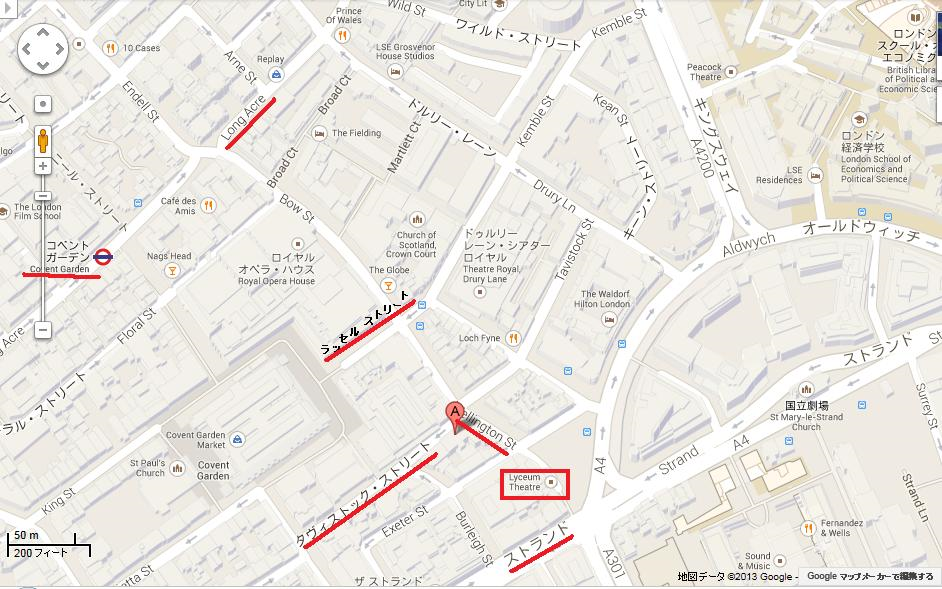
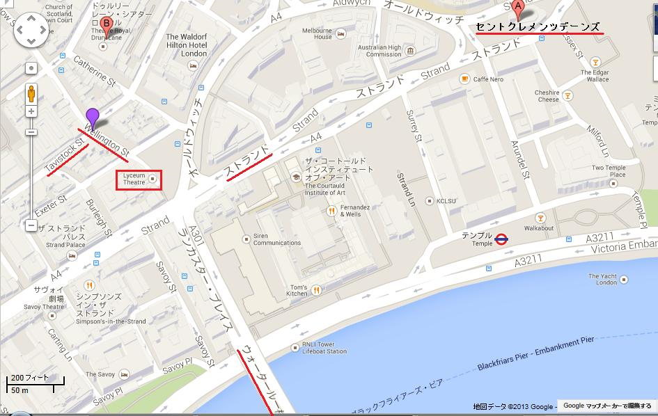
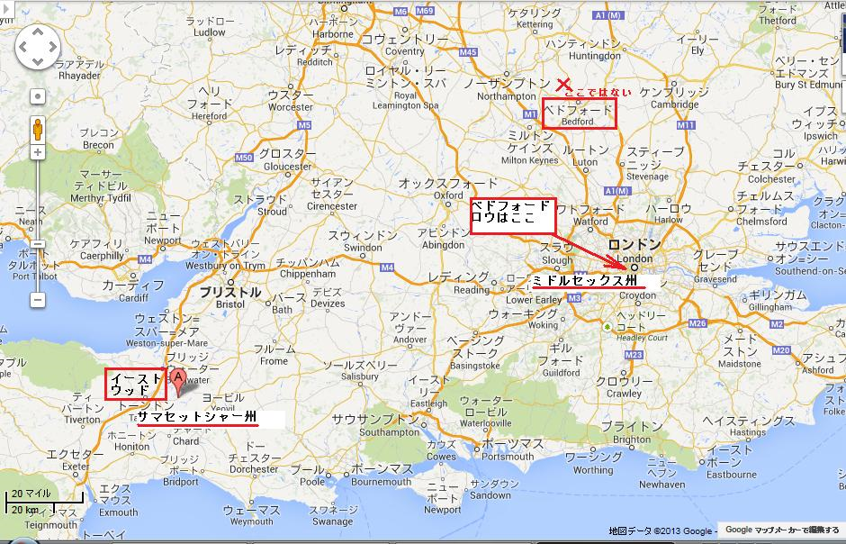
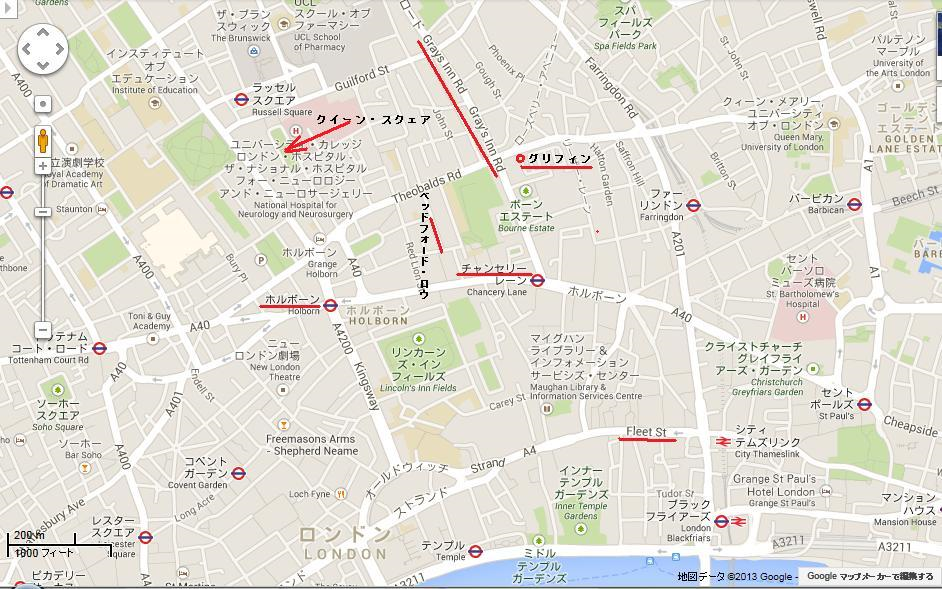
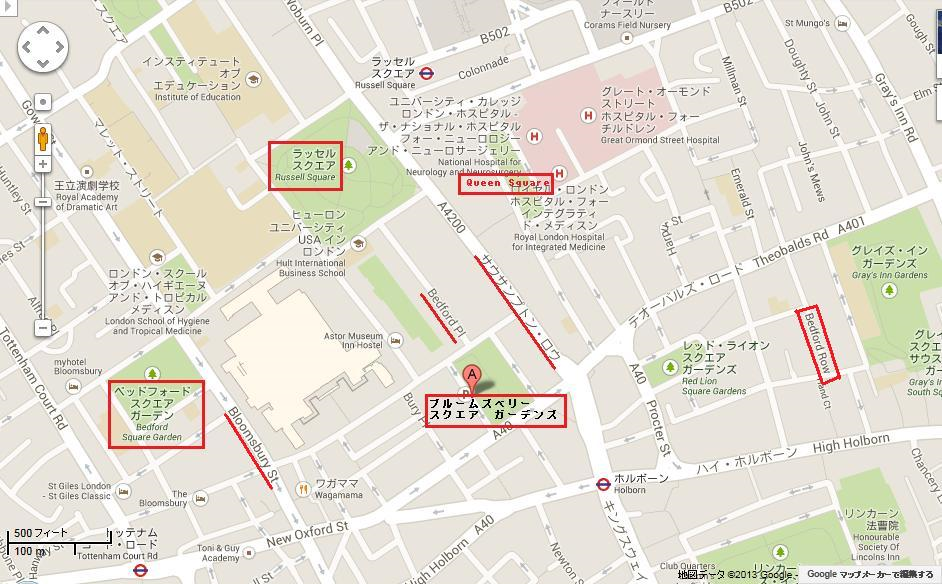
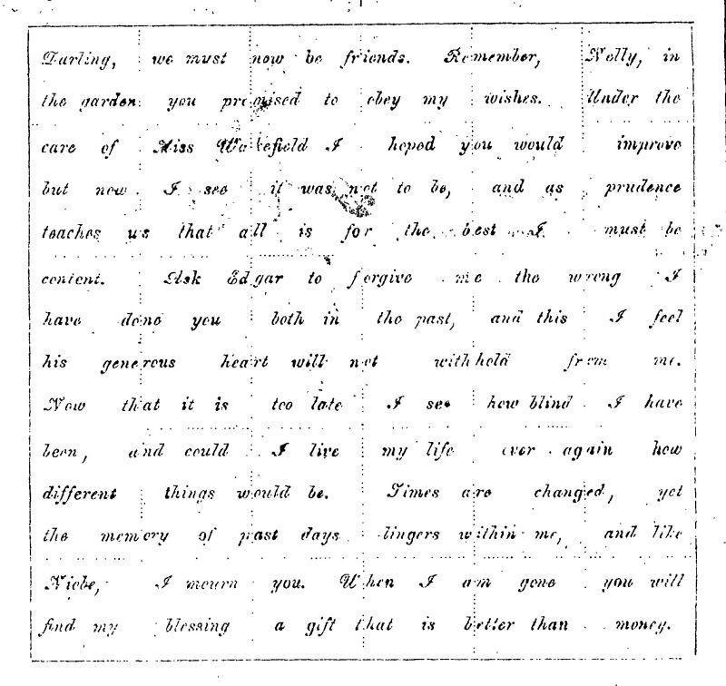
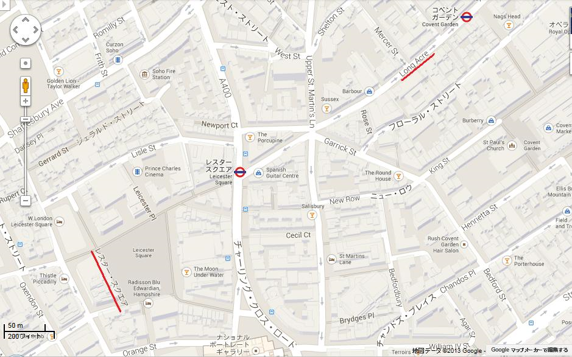
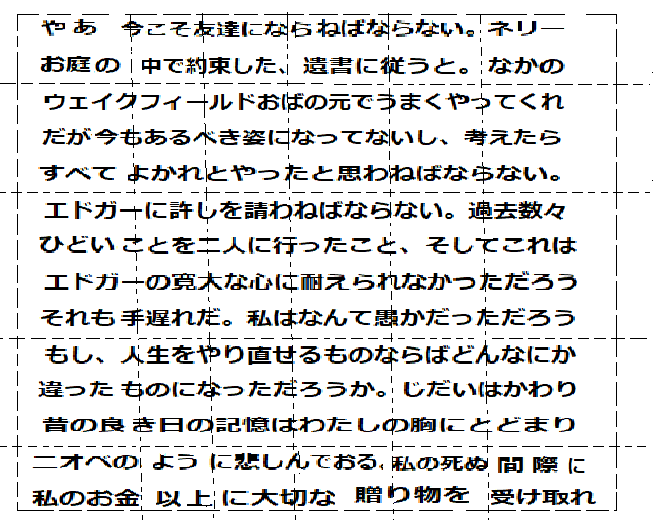
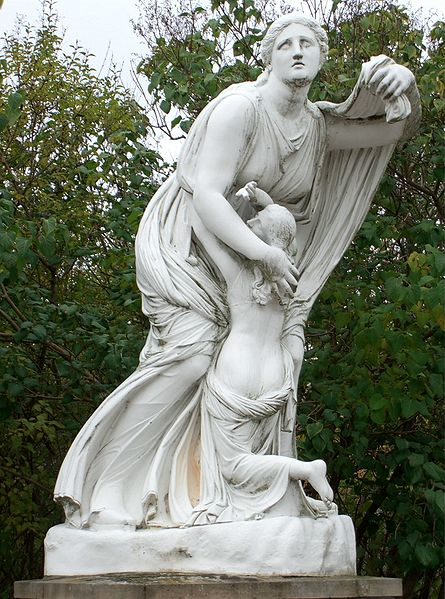

第一章
夜十一時。近くのチャイム音が鳴りやまないうちに、ロンドンの悪名高い通り雨が五分ほどザーッと叩きつけ、あたかも涸れ果てたかのように霧雨に変わった。
風に揺れるガス灯の明かりが舗道にゆらゆら、敷石にぼーっと落ち、ほ影が強烈なアーク灯の輝きで消える、そこがコベント・ガーデンだ。
靄が立ち込めるロング・エーカーの青白い光は弱く、向かい側のラッセル・ストリートは一層暗い。
タビストック・ストリート沿いの一軒の酒屋、ド派手な正面に明かりが輝き、怪しく光るガラス窓があふれんばかりの笑顔を振りまき、あくどい客引きをしているように見える。

店の扉にたむろする物欲しげな浮浪者の群れ、そこから数メートル離れて、一人の女がたたずんでいた。近くに同性の乞食がほかにもいるが、その類じゃなく、ひどいぼろ服を身にまとっているけど、一見して仲間じゃないと分かる。
若い、おそらく二十五歳を超えていないだろう女の顔には深い悩みの影があった。
半ば不機嫌に、半ば物欲しそうに、飾り棚の窓をじっと見入る女の姿は、街灯の強烈な光に一段と浮びあがり、高貴な顔立ちは、みすぼらしい衣装と苦労の表情で痛々しいほど対照的であった。
威厳があり、貧しい身なりに、気高い雰囲気を漂わせ、心労をじっと抱え、ポケットには二ペンスしか持っていなかった。
もし目の前の貧乏人がこんなわずかな金しか持ってないと分かれば、女の状況が推し図れようというもの。一人ぼっちで、友達もなく、無一文で、人口四百万のロンドンで、まさしく惨めのどん底だ。
おそらく女もそう思い、とっさに決めたのだろう。店の扉をしっかと押し、騒々しい酒場へはいっていった。
疑われるのではないかと半ば覚悟していたが、ああ、こんな所へ集まる者どもは余りにも世過ぎの苦労をしょっているので、誰も驚かない。
女がコーディアル酒を注文するとバーテンダーは当然とばかり、女のなけなしの銅貨を二枚受け取った。もしこれが最後の金だと知れば、きっと哀憐の情が湧いたことだろう。あいにくバーテンダーにそんな想像力はないし、ちょくちょくあることだが、ここで受け取る最後のはした金というのは、ヒトと貧乏人を隔てる湾のかけ橋だったりする。
女は止まり木に腰掛け、疲れた手足を休め、酒でカラ元気をつけながら、ぼんやり思ったのは、これで運命との戦いが終わり、一切何も残らず、将来の困難からすぐ抜けられる、つまり橋から飛び降りるということだ。
ゆっくりと瞑想にふけりながら、大コップ酒をちびちび飲みつつ、ふと妙な感じがして、どうしてこんな古いコップが今まで割れなかったんだろう。
だんだん、しかし確実に酒が減っていき、遂に残り数滴となった。そして時が来た。ぐいと飲み干すと両肩に小さなショールをかけて、再びロンドンの夜に舞い戻って行った。
ほんの夜十一時半、通りは人でいっぱいだ。ウェリントン・ストリートには芝居通がライシエン劇場から出てくる。劇場の屋根付き玄関はまばゆい華麗な色彩だ。夜会服を着た紳士や淑女が豪華な馬車を待っている。
女浮浪者はさまよいながら漫然と、あんなきらびやかな人たちに不幸とか没落、不名誉、後悔、恥辱なんてあるのかと思い、当てもなくぷいとストランドへ足を向けた。
通りに沿ってセント・クレメンツ・デーンズまで人目を引くこともなく無視され、痛々しく足を引きずり、場所も分からない。引き返して見れば最終客がライシエン劇場を後にしている。
そして無意識に向かった先がウェリントン・ストリートの下手ウォータールー橋だった。この嘆きの橋のたもとで立ち止まり、もし橋の別名を少しでも知っていたとすれば、自らの運命を待った。

そこはじめっとした夜にひっそりして、あたりに歩行者はおらず、たった一人で
ガス灯が真昼のように輝き、重苦しい冬空は真っ青、遠くストランドの耳障りなざわめきはこずえに吹く夏風の音か。はるか群衆のさんざめきはかつて愛した
灰色の石で出来た細長い古い家、ツタやツルで覆われた緑のベランダ、生い茂る芝が小池に続き、アヤメやスイレンが金色に咲き誇っている。芝生の中央に一体のニオベ像が立ち、傍らに座るのが私、一緒に居るのは私より二〜三歳若い少女、うりざね顔に金髪、天使のように純真で、眼の色は正真正銘の薄い青紫色だ。こんな風な映像が急流に映った。
女は
「やめて、おねがい、やめて」
女はギクッとして、ゆっくりと橋の欄干からおりて、傍らの顔を凝視した。だが逆光で見えない。
「墓場からの声だ、夢を見ていたのかなあ」
と言いながら、額をそっと片手で触った。
「神の思し召しよ。自分のやろうとしていることが分かるの。すんでのところよ。考え直して、考え直して」
自殺願望の女がゆっくり反復した。
「墓場からの声だ。確かに良い前触れかも。あの人の、あの人の声だ」
救助天使が一瞬、かすかな記憶をたぐった。どこかで女の声を自分の胸で聞いたことがあるような。
ふいに衝撃に打たれ、二人はぐいと引き合い、近くのガス灯の方へ行き、お互いの顔をしげしげ見つめた。守護天使が驚いたのなんの。惨めな女の青白い顔が輝き、救出人の首にだきつき、胸で悲しく泣きじゃくった。
「ネリー様、ネリーお嬢様、お分かりになりますか」
「マッジ、マッジじゃないの。マッジ、なんてことを」
やがて二人は落ち着いた。ネリーと呼ばれた女が相手の腕を自分の腕にしっかと握り、憎しみの橋から静かに離れ、不幸な女も完全に正気に戻ってついてきた。二キロメートルばかり歩くも、両者ひと言もしゃべらず、ストランドを抜け、ホルボーンへ行くところで見えなくなった。
ロンドンの夜の往来は続く。大通りは庶民の悲劇や不幸にお構いなく過ぎ去る。一人の命が救われた。でも広い大都会で、たった一人が何だっていうの。実は運命がその手に握られていた。ほんの些細なことに命は支えられ、ほんの一瞬で救われ、邪悪を束ねるもつれた糸巻きの、最初の一条をほぐしてくれる。
第二章
二年前。午後、太陽が家の真上に登り、病室に陽が差し込むイーストウッド、快適で清潔な古い家は、床から天井までオーク材を使い、壁には画家の署名入りの有名な絵が飾ってある。
大きなマリオン窓を二枚、夏空に開け広げ、出窓のタイル花壇からモクセイソウやヘリオトロープのかぐわしい匂いが漂って来る。薄青いふかふかのペルシャ絨毯は足音を消し、様々な色柄の毛皮があちこちに置いてあり、美術品や高価な骨董品は病室というより応接間にふさわしい。
ベッドに横たわる一人の男、明らかに肺結核の末期症状だ。ほほは高熱のため赤く、青い目がらんらんと光るのは病気が生気を吸い取っているからだ。まごうこと無き一人の老人、大きな体躯とぶ厚い胸板を持ちながら、憔悴し弱り切っているけど、若い頃は強靭な体力があったことを示している。額は大きく禿げあがり力強く、風貌はよく整い、口元は慈愛に満ちているものの、ひん曲がって苦しそうだ。親切で善良な男のように見えるが、恐怖に取りつかれているようだ。
鉛筆を握って一生懸命、紙に何か文字を書いており、時々わずかな動き、葉っぱ一枚が震えても、びくっとして顔を上げた。軽い作業じゃない、手は震え、息は絶え絶えなことから、病人には激しい運動だとわかる。ゆっくり、やっと筆記を続け、終り近くになり、一筋の笑みが口元に走るとともに、悔恨の情が顔一面に浮かんだ。
紙に書いていたのは少ない単語だったが、重要なようだ。単なる別れの手紙ではあったが、この手紙文の数行に若い夫婦の幸せがかかっていた。遂に書き終わり、大満足した様子で横になった。
そのとき女が入ってきた。病人はとっさに紙を枕元に隠し、恐怖で顔が引きつり、見るに哀れだ。でも入室した女はそんな表情など察知できない。若くて、かわいくて、少々お高いのはおそらく容貌と魅力的な体型の為だろうが、さぞや『器用なフィリス』もかくあるべし。
瀕死の病人が女を見据え、表情が哀願調に変わった。近くへ来るように手招きして、女の顔を手元に引き寄せた。
「あの女が近くにいないか。話が漏れないか。ちょいちょい聞かれている気がする」
召使い女が答えた。
「いいえご心配いりません。ウェイクフィールド叔母様は今ご不在で、村へ行かれました」
「よろしい。いいか、正直に答えなさい。ネリーから連絡はないか。かわいそうに、かわいそうに」
召使いの顔が興味半分から恥と悔恨の表情に変わった。老人の顔を覗き込み、涙をはらはら流し
老人はその激しさにびっくりして言った。
「しっ、しっ、頼むから泣かないで。手遅れになるから」
すすり泣きながら、女がシーツに顔をうずめた。
「旦那さま、申し上げます。ネリーお嬢様から何度も手紙がきましたが、全部捨てました」
なぜだ、という厳しい声に、女が驚いて顔を上げた。
「旦那さま、お許しください。ご存知のように、ウェイクフィールド叔母様のご命令に従わないわけにはいきません。お話しようとしたのですが、怖くて何もできません。旦那様も……」
病人が悲しみを押し殺した。
「ああ、わかる。人を操る力はすごい。おっと、忘れるところだった。マーガレット・ボールトンよ、私の眼を見なさい。昔のようにネリーお嬢様が好きか。お嬢様の為なら何でもやってくれるか」
女はかしこまって答えた。
「誓います、旦那様」
「ネリーはどこにいるんだ」
「存じません。最後の消息は一年前でした。旦那さま、手紙なり何なりと御用を仰せつけ下さればそう致します。たとえロンドンへでも探しに参ります。打ち明けなかった罰です。どうか、どうか信じてください」
老人はしばらくじっと見つめて図りかねていたが、女がしっかり見つめ返すと、やっと言った。
「そうしよう。すぐ私につけて言葉を繰り返しなさい」
『委託手紙を必ず目的の人物に渡すことを誓います』
『安全確実に引き渡すまで決して身から離しません』
女は誓いの言葉を簡単な儀式で復唱した。
老人は苦心惨憺して書きあげた手紙を差し出すと同時に言った。
「お前にこれを渡す。神の御加護がありますように。うまく行きますように。気をつけなさい。重要な秘密が含まれているから、肌身離すなよ」
紙は小さく折りたたまれ、妙な文書だが、外観は何ら秘密めいた感じがしない。やがて仕掛けが分かる。
女は畳んだ紙をちらと見て、すばやく自分の胸にしまい込んだ。瀕死の老人の顔に安どの笑みが浮かび、感謝の気持ちを表わした。
このとき、別な女がはいってきた。背が高く、やせぎす、厳しい顔つき、口元とあごは、いかにも冷酷という造りだ。一瞬、両目がランランと陰険に光り、召使いを一瞥したときの憎悪は心の奥底を探っているようだ。
「マーガレット、ここで何をしてる。すぐ部屋から出なさい。何度もここへ入るなと言った」
マーガレットは退出した。陰険な女が病室を無言で嗅ぎ回った。瀕死の老人が脅えた様子で見守る様は一匹の小鳥が蛇の動きを見るようで、震えながら女の薄情な口元に注目している。目をそむけようとしたが駄目だった。そのとき女が老人の気持ちに感づいたかのように言った。
「きょうはいつもより機嫌が悪そうね」
老人が弱々しく答えた。
「セリーナ、憎んじゃいないよ」
女が陰険な目で勝ち誇って睨みつけた。
「憎んでいるね、私を。嫌いでしょ、命令するから。嫌いでしょ、無理強いするから。嫌いでしょ、物乞いの餓鬼を引き離し、言う通りにさせたから」
老人は完全に脅され、女の薄情な唇を見つめていたが、ついに耐えられなくなった。やがて忍び寄る異変を感じ、息がだんだんあらくなり、胸が
「セリーナ、一人にしてくれ、一人にしてくれ」
「手おくれよ」
という声色は勝ち誇った素振りを隠さなかった。
仰向けになった額には死の影があった。忍び寄る暗黒に一瞬、パッと光が差し、唇が動き、やっと聞き取れた
「ネリー、許してくれ」
老人は死んだ。
腹黒い女がかがんで、耳を心臓に当てると、音がしない。
「やった、やった、ついにすべて、私のものだ」
運命の織りなす細い
第三章
ミドルセックス州、ベドフォード・ロウのカーバー所長には心残りがあり、その最大の苦悩は背負った難題と費用のことだった。つまり顧客に手数料をもらいながら、難しい法手続きを済ましておらず、ずっと懸案になっていたのは、長年誇りを持って勤めてきた職業人生の中で、極めて異常な事件だった。

事件はざっとこんなふうだ。顧客のチャールズ・モートン氏がサマセットシャー州のイーストウッドで一八八二年四月九日に死亡した。カーバー所長は一八八〇年五月一日にモートン氏の遺言を作成しており、その内容は同氏の全財産四万ポンドを
六ヶ月後、モートン氏の異父妹、未婚のウェイクフィールド叔母がイーストウッドの家に移り住み、それ以来すべてが変わってしまった。
姪のエレナが地域牧師の息子と結婚すると、異父妹のウェイクフィールド叔母がモートン氏をそそのかし、姪エレナの相続権を奪い、同氏が死ぬ一年前に新たに遺書を書き直させて、全財産をウェイクフィールド叔母に残すようにしたためた。
カーバー所長が気づき、権利侵害に強く反対し、執行時の破滅的な結果を考えて、もし姪のエレナを探し当てられれば、不法状態を正せると思った。だが、エレナは夫と姿を消し、手掛かりがない。だから、破廉恥な遺書が有効となる。
その後とても異常な事態となった。イーストウッドの銀行には家事用の数百ポンド以外、一銭もモートン氏のお金が見つからなかった。財産のすべてが高額抵当化されており、その有価証券が見つからず、一銭も取り返す事ができなかった。
財産の抵当化はイーストウッドの高名な弁護士によって正式に執行され、お金の投資は信頼のおける人物によって行われ、現金は一八八二年初頭にモートン氏から支払われていた。新聞に告知したりして、実際にあらゆる手を尽くして、無くなったお金を探したが、無駄だった。
ウェイクフィールド叔母がすったもんだして得た金はわずか千百ポンドしかなかったので、再び貧乏へ転落し、ロンドンの安宿へ舞い戻らざるを得なかった。
この
ベドフォード・ロウの事務所で、カーバー所長が汚れた窓ガラスを指で突つきながら軽く口笛を吹いて、突っ立っていた。事務所で聞こえるのは助手が羽根ペンを走らせる音だけ、調査報告書を下書きしている。
カーバー所長が助手に近づいて言った。
「ベイツ君、本件は実に妙だ、とても変だ」
そうですね、と返事してベイツは下書きを続けている。ベイツには所長の考えを予知する能力がある。だからベイツが、そうですね、と言った時、これはイーストウッド案件だとピンときた。所長が言った。
「気前よく、ええと、いくらにしようかな、そうだなあ、よければ小切手を……」
「千ポンドですね。違いますか、構わないと思いますが」
カーバー所長がほめちぎった。
「ベイツ君、君はすごい。まさに言おうとした金額だ」
冷静なベイツが応じた。
「妙なことに所長と私はいつも考えが同じです。長い付き合いでしょう。そろそろ共同経営をと思っていますが、所長もそうお考えでしょう」
所長の習わしとして、助手の冷やかしに笑顔を見せない。
「ベイツ君、この謎を解いたら、そう願いたいが、こう言おう、驚くなよ、君に共同経営権を与える」
「どうもです。解きたいですね。いま探すべき人は……」
「エレナお嬢だ。ちょうど考えていた」
このとき、不動の姿勢だった助手が顔を扉に向けて言った。
「どうぞ、若いお方のシートンさん、おはいりください」
ベイツが興奮して叫んだ。
「おお、エレナお嬢さんじゃないですか」
「ねがってもない」
とカーバー所長。
すぐに、この女性をカーバー所長に面会させた。背が高く優雅で、容姿は当世の女性より抜群にいい。上から下まで淡い黒色にまとめ、帽子や上着やドレスを質素に切り詰め、えり首を一点だけ白く強調し、醸し出す態度や雰囲気には言葉に表わせない教養と育ちがあり、紛れもない。
顔や容貌は、繁華街ですら男どもが振り返って見とれるほどだ。肌色は透き通るぐらい青白く非の打ちどころがなく、大理石のような真っ白い顔に、大きな
女が口を開いた。
「カーバー所長、お忘れでは」
「エレナお嬢ちゃんじゃないか。さあ座って」
この女性こそ二年間探していた女だ。カーバー所長は冷静なくせに、一瞬ぶっ倒れるかと思った。
「お嬢ちゃん。なんでここへ来なかったんだね」
「カーバー所長、誇りですよ」
女はわざと陽気にふるまっている気配だ。
「あのな、誇りなんかで昔なじみを訪ねてこないなんてことがあるか」
「カーバー所長、本当ですよ。まさか私の数少ない財産である誇りも捨てろとでも」
弁護士のカーバー所長がわざと手厳しく反論した。
「じつに、くだらん。さ、そこに座って。積もる二年間の事を話してくれ」
「すぐ話します。叔父は、かわいそうに騙されて、私が結婚したことで、私達を家から追い出しました。私たち夫婦は生活の為にロンドンへ出ました。二年間、私の夫は文筆で生計を立てようとしました。田舎に留まって石切り場で働くか、農場で働いた方が良かったかもしれません。カーバー所長、生活はとっても厳しかったです。文筆業でお金を稼ごうとするには強い意志が必要で、誇りを捨てて、失敗を恐れぬ心構えが必要です。もしディケンズの
カーバー所長が声を詰まらせた。
「お嬢ちゃん、心配したぞ、心配させおって、本当に。二年間ずっと探しておった。言ってごらん、出来るだけのことをするから」
エレナが両眼に溢れる涙を一杯ためてお礼した。
「ありがとうございます。そうしてくださると思っておりました。来て良かった。何とお礼していいやら」
「そんなことはいい、礼はいらない。その前に知らせたいことがある。いいかい、叔父さんが死ぬ前に……」
「死んだ？ 叔父さん死んだの？」
「しまった。知らなんだ……」
カーバー所長が不意に止めて、言い淀んだ。若い女が平常心を取り戻すまで時間がかかった。そして最後の様子を聞いてきたので、カーバー所長が口を開いた。
「二年前だよ。さあ、教えてくれないか。最後に叔父さんと会ったとき、どんな形でも、文字や口頭で聞いてないか。手紙か、伝言でも」
エレナが半ば悲しげに、半ば軽蔑するように、首を振った。
「ウェイクフィールド叔母様をご存じないようですね。叔母様がイーストウッドにいる時は何の連絡もありません」
「ああ、そうだろう。だから何も聞いてないか。よろしい。いま、すごいことが起こってるんだ。叔父さんが死ぬと、遺書が執行され、全てウェイクフィールド叔母に行った。だから君に言う必要はなかったんだろう。ここから話が一番奇怪なところだ。地方銀行に残った数百ポンドを除き、一銭も見つからない。一ペンス残らず全財産が債権化されていた。株も売り払われ、実際、イーストウッドの家しか残されていなかった。知っての通り、家は狭いから大した価値はない。二年間探したが、手がかりさえ見つからなかった」
エレナが冷たく言い放った。
「ウェイクフィールド叔母様が隠しているんでしょう」
カーバー所長が強く否定した。
「あり得ない。何の目的があってそうするかい？ 財産は明らかに叔母に残したんだから。それに派手好きな女がわざわざ薄汚い下宿屋で暮らすなんてありえない」
「それで、イーストウッドは？」
「空き家だよ。売ることもできないのさ」
「じゃあ、ウェイクフィールド叔母様は四年前と同じね。やった、カーバー所長、ともかくいいお知らせね。これで腹の虫がおさまったわ」
とエレナが平然と言い放った。
「ネリーや、そんな言葉は聞きたくないし、悲しくなる。昔はきつくなかったのに」
とカーバー所長は厳しい。
「許して下さい、カーバー所長。この二年間のひどい生活を考えれば、お分かりでしょう」
「それで君の夫は？」
「生活の為に肉体と精神を酷使して必死です。夫を見ると悲しくなります。私の前ではいつも希望を語り、いつも働き、いつも笑顔で陽気です。最高の夫です。カーバー所長、毎日夫の様子をご覧になれば、文字通り疲れ果てて、きつい言葉も出るでしょう。お分かりになって」
カーバー所長が眼鏡の奥から疑わしそうな目で見た。
「いや、いや。分かるよ。君を責めたのは今まで私の所へ来なかったことだ。知ってるだろ、私が独居老人で、金持ちだってことも。会いに来るのが親切というものじゃ。いいかい。日曜日に夫婦で私の家に食事にいらっしゃい。ラッセル・スクエアの昔の住所は知っとるだろう」
エレナが涙をぽろぽろ流した。
「ありがとうございます、カーバー所長。行きますわ。子供も連れてきていい？」
「えっ、何だって。子供？ もちろん、もちろんいいよ。昔のことを語りあって、この悪い事態を少しでも良くしよう。そうか、子供が生れたのか。それは、それは何よりだ。時の流れは速いもんだなあ。さあ、率直に言ってくれ。どんな援助が欲しいんだ。ああ、つまり、少々の、要するに、お金かい」
エレナが耳元まで真っ赤になり、すぐ言おうとしたが、何も言わない。
「そうかそうか、ベイツ君……」
カーバー所長がせき立てた。
もうベイツは小切手に手を置いて、日付を書き始めていた。カーバー所長がうなずいて承認し、金額を指で示した。すぐに言葉を継いで、エレナの戸惑いを救った。
「友達がいると思うが。一人もいないと寂しいぞ」
エレナが顔を輝かせた。
「ええ、いいお友達が一人います。ジャスパー・フィリックスという作家を聞いたことは？ 最高のお友達です」
「聞いたことがある。フィリックスか。知り合いになりたいね。本も全部読みたい。友達と聞いて嬉しいよ。作家として立派な心根の持ち主らしいな」
「立派な人です。フィリックスさんの口添えが無かったらと思うと、ぞっとします。フィリックスさんがいなければ夫の作品は一つとして認めらなかったと思います」
「ネリー、神の思し召しだと考えざるを得ない。君にいい日が起こる気がする。でも、起こらなくても私の落ち度じゃないよ。最後にはすべてうまく行く予感がする。叔父さんの財産はどこかに隠されていると思う。隠したのは君の為だとしか考えられない」
エレナは冷静だ。
「カーバー所長、期待しないで。お金は無いたと思います」
カーバー所長が陽気に言った。
「ばかな、命ある限り希望はある。怪奇小説の主人公の気分だ。そうなるぞ。まず君の叔父が死ぬと、財産が消えた。次に君が消え、その時から切に、文字通り切に、会いたくて、そして君が現れた。あとは隠された財宝を探すことだ。そしておとぎ話のように幸せになりなさい」
「熱心ですね。埋蔵宝石箱を見つける必要があります。手がかりはありませんが、ホホホ」
カーバー所長が重々しく答えた。
「その通り。お嬢ちゃん、君がその糸口を作ったんだよ。君がイーストウッドを去った後、仲良しのマーガレットは家にいて、叔父さんが死ぬと、姿を消した。ウェイクフィールド叔母がチラと私に漏らし、叔父が死んだ日に病室で二人っきりだったとか」
「二人っきり？ そのあと消えたの？」
と言ったエレナは無関心どころか、両目が興味でキラキラだ。
「そうだ。マーガレット・ボールトンさえ見つければ」
すると、エレナが立ち上がり、カーバー所長にゆっくり近づいて言った。
「簡単ですよ。いま私の家にいますから。昨晩ウォータールー橋で見つけたばかりです。実は助けたのです」
「助けた？ まさに神の思し召しだ。助けたって？」
「自殺からです」
十五分後、エレナ―はカーバー所長の事務所の外に立ち、友人を待っていた。顔に赤みが増し、目が輝いているから、希望、しかも強い願望があった。じっと立ちつくし、通行人の人目なんか気にせず友人を探した。
やがてお目当ての人物が目に入った。背が高くやせ形、青い目が窪み、二枚目にほど遠いが、知性の塊といった大男で、無造作に整えた太い口髭が繊細な口元を覆っているものの、笑みは隠せない。ロンドンでは顔と姿が知られており、雑踏でもジャスパー・フィリックスを振り返り、強面の顔と長身を称賛した。通りを軽快な足取りですたすた歩いてきて、エレナに最高の笑顔をみせた。
「君のことを忘れたとでも？ ゲイズイン・ロードをぶらついていたんだ。実を言うと、ベドフォード・ロウは俺に合わない」
エレナがおどおどして言った。
「待たせたかしら。貴重なお時間ですから」
大作家が軽口を叩いた。
「お嬢ちゃん、それは言わない。時間を大いに楽しんでいる。まずお目にかかったのが舗装工の喧嘩だ。普通じゃないね、大の力持ち同士が大けがせずに相手を倒すんだから。次に長いことしゃべったのがインテリ煙突掃除夫だ。賢い男だが、過激派だね。半時間大いに楽しんだよ」
「半時間もですか。そんなに長く。フィリックスさん、貴重な時間を費やしてすみません」
「ハハハ、恐縮しなくても。さて、長く引き留めないでくれよ。キミの家は近いだろ。今から野暮用でフリート・ストリートへ行くところだ。ついでにご主人の短編を売り込むから。今日の午後、寄りますよ。楽しみに待っててください」
ジャスパー・フィリックス氏は路地を通りホルボーンへ向かい、賑やかな大通りに沿ってチャンセリー・レーンへ曲がった。名高いグリフィンを横切り、サミュエル・ジョンソンが好んだ遊歩道フリート・ストリートから、長い路地へ消えた。目的地はここだ。

扉にミダス・マガジン社の表札があり、文字の下に一階と書いてある。薄暗い階段をあがり、立ち止まった扉に白文字で編集長とある。扉をノックした。返事を待たずに、扉を押しあけた。フィリックス氏が青い目でいたずらっぽく聞いた。
「シンプソン編集長、どう？」
ミダス社の編集長が心から歓迎した。
「やあ、フィリックス、お見限りだな。雑誌の原稿を持ってきたのか」
「持って来た。気に入ると思うよ」
「キミの原稿か」
「いや違うけど、何と言っても俺にも書けないほどの代物だ。中味を見たらいちころよ」
編集長は気乗りせず応じた。
「ふーん、どうかな、素人じゃなあ。もちろん時にはいいのに当たるけど、たいがい……。そうだ、キミの原稿だということにすれば……」
「おい、まじに、シンプソン、俺の何が欲しいんだ。作品じゃなくて名前だろう。ミダス雑誌の売れ筋はよく知ってるよな。名前なんて大したことは無い。来月のミダス雑誌の巻頭にこの無名作家の新シリーズを発表すれば、部数が何百倍も確実に増えるよ」
「まったく、遠慮ないな。だけど、なんでそんないいものをキミが持っているんだ」
「では、君に渡そう。中味は読む必要ない。もし受け取らなかったら、俺にも当てがあるから」
「その天才とやらの偉業にいくら欲しんだ」
「そうだな、まあ、十ポンドだ。採用か没か」
「キミが傑作と言うなら、感謝しなくちゃ」
「収めた方がいいぜ。俺も感謝される。でも、いいかい、いつかこの無名作家はキミがいま助けるどころか、キミの会社の為になるよ」
ミダス雑誌のシンプソン編集長がホッとため息をついた。知らない寄稿者に十ポンド払うのは良くないが、フィリックス氏を怒らせるのはもっと良くない。
編集長が繰り言を言い、
「もし、これがキミの作品だったら、すぐ……」
「馬鹿なことを言うな」
とフィリックスがおかんむり。
「まあまあ、フィリックス。キミのお弟子さんの原稿は受け取るよ、キミに感謝する」
とシンプソン編集長がなだめた。
「俺に感謝しなくていい。採用して、最高の原稿にお金を払ってくれればいい。公正な取引だ。人気が出ても、キミの力じゃないけど」
シンプソン編集長が白い歯を見せ満面の笑顔でやんわり言った。
「フィリックス、保証してくれて感謝する。こんな陽のあたる作品なんて聞いたことない。原則として投稿原稿には目を通さないし、直ちに採用や支払いにも応じない。キミ、この原稿の小切手が今必要か」
「ああ、すぐ現金でもいいよ」
シンプソン編集長が小切手に当該金額を書いてフィリックスに渡すと、桃色の紙を折り畳んで胸ポケットに入れ、それから話は別な方面に移っていった。
第四章
クィーン・スクエアとブルームズベリーの地域は、その

南側は特徴のない地味な木を二本植えて隠してあり、正面は堂々たる玄関があるが、廃屋のように見え、
首都全般の案内用に、扉には真鍮版がはめてあり、ホイップル夫人の住居であることが分かる。さらに同じ銘板から、興味深い情報として、ホイップル夫人が婦人服仕立屋であることも分かる。
奇抜な図柄と、あり得ない色柄を使った薄汚れた布地でそれとなく分かる。さらに銘板情報から、中に芸術家が賃借りしている。というのも、置き手紙のように、古い広告ビラの裏側にそれらしきものが書き散らしてあり、一階の窓にぶら下げてあるからだ。
ホイップルマンション全体からして、最貧民向けらしく、安いことが一目瞭然だ。一階は、ここだけの話だが、一週間二十五シリング、儀礼用の客間は二ポンド、安い二階はホイップル住民によれば十五シリングぽっきりだとか。我々の関係者がいるのは二階だ。
部屋は広く、調度類はそれ相応だ。カーペットの模様は無くなり、寄り糸まで擦り切れているから長く使っている。家具類は椅子五脚と一脚の長椅子、後者は妙な馬の毛で織られており、ひょっとしたら、剛性と耐久性を求めて、鉄線織りかもしれない。窓は
若い男がそのテーブルに座り、なにか書いている。
しばらく仕事をコツコツ続ける傍らで、じっと見守る子供が堅そうな肘掛椅子に丸まり、仕事が終わるまで行儀よく待っている。仕事が進むにつれ、子供はページが埋まるのを興味深く眺めている。父親がやっと軽くため息をついて、原稿を横に置いて、辛抱強く待っていた子供に向き直り、満面に笑みを浮かべて言った。
「いい子にしていたね、ネリー、さあ、お父さんに言いたいことがあるだろう」
「パパ、おはなし かいてたの？」
「そうだよ、ネリー、でもお前には面白くない話だよ」
「パパのはなしは ぜんぶすき。ジャスパーおじさんがママにいったの。パパのは『とくそうてき』だって。『とくそう』はすきよ」
「独創的ってことだよ、ネリー」
子供がムキになり言い張った。
「とくそうてきだよ。パパはそれを売るの？ 売れるといいな。あたらしいお人形さんがとってもほしい、だってぼろぼろなんだもの」
「いつか、いっぱい買ってやるからね」
子供が父親の顔を真剣に見つめて言った。
「ほんと、パパ、でも、いつかって、ながいんでしょう？ わたし いくつになるの？」
「ネリーや、もっともっと大きくなってからだよ。パパの年じゃないけど、ずっと先だよ、ハハハ」
「そうお、パパ、それじゃあ、わたしがおぼえているなかで、いつかって、きたことある？ こんしゅう くる？」
「どうかなあ、ネリー、いつでも来るよ。今日来るかもしれないし、いま来る途中かもね」
子供が頭を激しく振ってぐずった。
「パパ、わからない。くるまでこわい。ゆうべママがベッドにいれてから いっしょうけんめい おいのりしたの。なんでママはなくの？ いつかをもとめて ないているの？」
「ネリーや、それは夢だよ。ママは泣かない。間違いだよ」
父親の声はかすれ声だ。
「ちがう、ほんとうだ、パパ、まちがいじゃない。このまえママが、いつかをもとめて うたってないてたよ。わたしのかおを びしょびしょにしたんだから」
「しーっ、ネリー、そんな話はやめて、おねがい」
「でも ないたんだから。パパは、ないたことある？」
子供はしつこい。
「ネリーや、あの小さなスズメを見てごらん。おなかがすいてるように見えないだろう。部屋に入ってお前に会いたいんだよ」
子供は出窓に止まったロンドンの薄汚いスズメを見た。
「パパ、あれはいつかをまってるのよ。がまんしているんだわ、おなか すいてそう。わたし おなかすいた、パパ」
父親はいとおしそうに子供を眺めてなだめた。
「ママが戻るまで待ってね」
「わかったわ、パパ。でも おなか すいた。あっ、ママだ。ママ うれしそうだよ、パパ」
エレナがむさ苦しい部屋に入ってきたとき、夫が妻の顔に浮かぶ希望と幸福を見逃すはずがない。妻を見る夫の目に期待があふれた。
「ネリー、ママが帰ってこないと思ったの？ 夕食が欲しいかい？」
「ママ、かおいろが いいわ、いつかをみつけたのね」
子供がうっとりして言った。
エレナが
夫がおどけて答えた。
「二人で難しいことを話していたのさ。未来のことだよ。ネリーが欲しいのはいつかだよ。みんなが望むあり得ない日だよ」
シートン夫人が子供にやさしいまなざしを注いで言った。
「喜ぶと思うわ。それを見つけたのよ、エドガー。わたしカーバー所長に会ってたのよ」
「そんなことだろうと思っていたよ。でも所長はあの女魔法使いに脅されて、会わなかったろう」
「いいえ、長いこと話したのよ。実は日曜日に家族全員、食事を誘われたの」
エレナは嬉しそうだ。
「すごいじゃないか。経済的な助言やら、別れ際にお恵みをもらったのでは」
「いいえ、きっと忘れたのでしょうね。この封筒を渡して、あなたによろしくって」
妻の差し出した封筒をエドガー・シートンが面倒くさそうに受け取り、乱暴に指で封を切った。だが、中味の形を見た途端、表情が熱くなり、興奮して叫んだ。
「おっ、小切手だな」
「いいえ、ただのお恵みよ、フフフ」
「お恵みの変身か。二十五ポンド小切手だ。ネリー、今日の神様はとてもありがたい」
シートンの声は感動で震えている。
そうね、とそっけない返事の妻は眼に涙。
子供のネリーは何事かと両親を見たが、笑っていいものか、泣いていいものか分からない。ただ子供の本能にも、ことの重大さは分かった。
「パパ、いつかがきたの？ うれしそうねえ」
エドガーが子供を両手で持ち上げて優しくキスして、片手で抱きかかえ、もう片方を妻の腰に回して答えた。
「そうだよ、お前のお祈りが届いたんだ。いつかが遂に来たんだよ、神に感謝しなくちゃ」
しばらく誰も話さなかった。妻も夫も感謝でいっぱいだった。なんと些細なことで、貧民は幸せになり、喜びの盃は満杯になることだろう。
にぎやかな
エレナは叔父の財産が奇妙なことになっていると、すぐ夫に伝えた。そしてカーバー所長の見立てを話すと、夫はちょっと考えたあと、納得した。
マーガレット・ボールトンならこの件に必ずや光を当てられるかもしれない。実際、自殺しようとしたマーガレットを助けたという奇怪な事実は神のご介入を示している。
叔父のモートン氏が死んだ日にマーガレットが長いこと話し込んだので、ウェイクフィールド叔母がとても不安がり、葬儀の後マーガレットが
マーガレット・ボールトンはその日、起き上がれなかった。前夜、雨に打たれ、ひどい風邪をひいたためだ。夫妻は妻の決断により、真相を聞くことにした。もし手がかりが得られなかったら、奇怪というほかない。
シーツと残飯を片付けた後、エドガーが言った。
「ネリー、この秘密は作家のフィリックスさんにも話した方がいい。きっと力になると思うよ、頭脳は多いほどいい」
「確かにそうね、知らせるべきね」
「午後、俺がフィリックスさんの所まで行こうか」
エレナが声をはずませてすぐ反対した。
「必要ないわ。フィリックスさんなら、お招きすればいらっしゃいます。お恵みを戴いたことだし、お返しに食事を招待しましょう」
第五章
作家フィリックス氏は打明け話にひどく心を動かされ、常識を超えて、あのカーバー所長なみの雲をつかむような話に傾き始めた。こんな平和な時代、高名な英国紳士の財産が消えるなんて聞くだけで、仰天することだから、現在は糸口さえつかめないけれども、これには途方もない何かあるに違いないと感じた。
作家のフィリックス氏は、思い出してもらえば、分別のある人だが、夢想家の中の夢想家でもあり、職業がら怪奇物語の編み手であり、そういうのを選択しがちであり、従ってエドガー・シートンの半ばけなすような、半ば確信的な見方を小馬鹿にして、こう言った。
「シートン君、キミが全部正しいとは思わない。本件をいい加減に扱っている。第一、ウェイクフィールド叔母はキミの奥さんの叔父とは血がつながっていない。もし叔母さんが財産を手にしていれば、私の感じで、正当化すべきは段階を踏み、現在の遺書を破棄してもらうことだ。しかし争う財産が見つからない限り、当分遺書に効力は無いし、ウィークフィールド叔母も金はないし、訴訟は怖いから」
エレナが割り込んだ。
「それはあり得ません。叔母さまがどんなにはったりが好きか知らないでしょう。そんな脅しでは叔母さまの考えを止められません、たとえ手段があっても」
「本当にそういう事情なら、とても難しい。それじゃ、前提として、叔母さんが金も得られず、隠し場所も知らないとしよう。ところで、マーガレット・ボールトンの件は」
「いま話します。昨晩、夜の十一時半、ウォータールー橋を渡っていました」
ここでフィリックス氏が割り込み、夫のエドガー・シートンを
「女性を一人で歩かせるなんて、悪いお人だ。あ、すまない。続けて」
「実はウォータールー駅で夫とはぐれたので、家路を急いでいたのです」
フィリックス氏が語気を強めた。
「どうして辻馬車に乗らなかったんだ？ しまった余計なことを。すまん、どうぞ続けて」
エレナの顔色を見て反省した。
「申し上げましたように、橋を渡ってた時、そばで女が橋壁に登っているのが見えました。よく覚えていませんが、一分足らずだったし、今では夢のようです。女は私の昔からの子守、というよりお友達のマーガレット・ボールトンでした。奇妙でしょう。事情が良くお分かりになったと思います」
フィリックス氏が奇妙な話に一時考え込んだ。単なる偶然の一致以上のものがあると、直感を捨て切れなかった。
「間違いなく、これには何かがあると思う」
エレナが軽くため息をついた。
「そう願いたいわ。事態は前より良くなっているけど、安定した収入が切実です」
「ママ、いつかがきたのね」
と暖炉の敷物に座っていた幼いネリーが甲高く言った。
「子供は早耳だなあ、ネリー、ジャスパーおじさんの所に来てキスして」
と作家のジャスパー・フィリックス氏。
「いくわ、ジャスパーおじさん、でもわたしの みみは、はしらないの。ママ、わたしの みみ、はやい」
「いいえ、ジャスパーおじさんはあなたのことを いってるわけじゃないのよ、ふふふ」
「それじゃあ、おじさんの おひざに のろうっと」
こう言って柔らかいジャスパーの膝に乗って、差別し始めたのは、ジャスパー・フィリック氏の口髭が気に入り、父親の毛深い腕を嫌うという、批判の方法であり、温厚な文筆名士のフィリックス氏を大いに満足させた。
子供がなついたので、フィリックス氏が続けた。
「さて、再開しよう。まず、マーガレット・ボールトンに今日ぜひ会いたいな」
シートン夫人のエレナが女性感覚で言った。
「フィリックスさん、それには賛成できません。あんな精神状態ですから今日調べるなんてむごいでしょ。どうなるか、お考えにならないの」
フィリックス氏が真面目に言った。
「私の本心が正確に伝わっていないようで。マーガレットの神経は今張り詰めているから、頭が激しく活動しているだろうから、詳細を思い出せる状態にあり、
エレナは女心で自らの好奇心を押さえている。
「でも、とても残酷ですよ。非常に神経質な状態です。元々病的なほど信心深いですし、昨夜罪を犯そうとしたことで動揺しています」
「ああ、たぶんそうだろう。でもいま是非会いたいね。誰にも言えまい、どれほど重要かは」
「ははは、フィリックスさんの好奇心は伝染しますね。実際、あなたがそれほど興味を持つとは思いませんでした。妻は猛反対ですが、あなたも相当なものですね」
エレナも呆れ果てて言った。
「まったく、人をいたぶりなさる。私も好奇心をちょっとゆすられましたけど、気まぐれな大人が二人も好奇心を満たすために、不幸な女性を苦しめることは許しませんよ」
フィリックス氏が謙虚に応じた。
「不徳の致すところです。ですが、是非患者さんに会いたいですな。たとえ数分でも」
エレナが余りのしつこさに、笑って言った。
「じゃあ、マーガレットの所へ行って、会えるか確かめますけど、がっかりしなさんな。これ以上刺激したくないから」
エレナが部屋から出ていくと、フィリックス氏が言った。
「好奇心は我々だけの専売じゃないぞ。シートン君は果報者だよ、困窮しているけど。キミの奥さんのような人が不安を軽くしてくれる」
エドガー・シートンが熱く応えた。
「全くその通りです。何回もあきらめかけたのです。エレナの為じゃなかったら、そうなったかもしれません」
フィリックス氏が考え込んだ。
「妙だなあ。キミの奥さんはそんなに勇気や度胸があるようには見えないけど、しかしそうじゃないぞ。わしは二十年間、人間研究をしてきたが、英雄には失望させられた。最弱の人が最強のことをやるのを見てきた。反対に、最強のものが困難に直面すると、すぐ参るのも見た。最強の困難こそが、世の奥方を天使にするのじゃ」
「フィリックスさんは一度も結婚されなかったようで」
「理想の女性が真っ先に失望させたと言わなかったっけ。そのうえ、どんな女がこのジャスパー・フィリックスを知って愛すと言うのかい」
「あなたの名声だけを……」
「そうだ、名声とお金だよ。二十年前、無名のジャスパー・フィリックスだった頃、結婚したけど、そんな昔の話などしたくない。話題を変えよう。キミにいい話をいくつか持ってきた。まず君から預かった作品が売れた」
「やった、うれしい。きっと私の為に、お友達からギニー金貨を巻きあげたんでしょう」
「とんでもない。傑作だから売れたんだ。十ポンドだぞ」
「十ポンドですか。夢か、天才か」
「どっちでもない。本当だ、お世辞は言わない。ほら小切手だ、夢じゃないだろう。あと、天才でもない。しかし才能はある。さらに、伝えることがある。メイフェア新聞の編集長からメモを持ってきた。キミの作品を見せたんだ。メイフェア新聞のベーカー編集長は文学作品を見る目が肥えている。キミの写実的な描写に感銘を受けたと言うんだ。もし仕事を引き受けたいなら、ロンドンにある外人賭博クラブの本部に潜入して、ゴシップ記事を新聞に書かないかと言うんだ。そんなに楽しい仕事じゃないけど、クラブの入場許可証を渡すはずだから、その黄金のカギがあれば、役立つ重要情報が得られる。仕事はきつくて、ちょっと危険かもしれないが、名声を獲得する大きなチャンスだ。引き受けるかい」
シートンが飛び上がって言った。
「やります。フィリックスさん、やらないとでも。これで男になれます。あなたがいなかったら、今頃どうなっていたか。言葉では感謝しきれません。ご親切にどうも」
フィリックス氏は相手の感謝を意に介さず言った。
「運命の行く末は分からないが、とにかく、救済や余裕にはなる。あとはキミの能力次第だ。もし私が君の立場なら、危険に飛び込むなんてことは妻には絶対言わないぞ」
「かわいそうに。妻はどんなにか感謝することでしょうに。でも危険なことは事実ですし、私は怖くないけど、妻を不安にする理由はありませんから」
その時、エレナが部屋に戻って来て言った。
「何の
「いいお知らせだ、ネリー。いい知らせだ。正規の仕事が見つかった。誰のおかげか聞かないでくれ」
フィリックス氏がはぐらかした。
「そういうことだ。感謝するなら、キミの能力にだよ。それで、患者はどう？」
「当分、質問は延期してください。今は何も言葉が出ないのです。実際、心配ですからお医者さんを呼びました」
フィリックス氏が立ち上がり、上着ボタンをかけながら言った。
「そうか。当分お預けか。それじゃ、帰るとするか。シートン君、いつでも仕事にかかれるように」
エレナが話そうとすると、
「お構いなく。それでは。おやすみ、ネリーちゃん。ジャスパーおじさんのことも時々思い出してね」
エドガー・シートンが心をこめて握手した。
「おやすみなさい、フィリックスさん、お礼は申し上げませんが、感謝でいっぱいです。お休みなさい」
第六章
「マーガレット、具合はどう？」
「もう駄目、ネリーお嬢さま。朝には死にます」
一週間後、患者はだんだん弱っていった。連日の野宿、厳しい生活、食うや食わずの為、弱い女の体はこたえた。あの自殺未遂の晩、冷たい風雨に
神経が参る段階をとうに過ぎて、もう穏やかな気分になっていた。死を待ちこがれ、怖い感覚などすっかり失せて、希望と期待があった。
今までエレナは昔の記憶や思い出を聞く気になれず、手厚く介護してきた。これは真の女性だけが成し得ることだ。
その日ずっと、ベッドのそばで成すことなくじっと座り、時が刻々と過ぎ去るうち、患者の熱っぽく落ち着かない様子が穏やかになり、話さず、いやそうさせないにもかかわらず、エレナは何か言葉か、きっかけを待っていた。
「ネリーお嬢様はいつもよくしてくださいました。あなたがいなかったら、今頃私はどこで、くたばっていたやら」
「しっ、マーガレット、そんなこと言わないで。いいこと、全てお許しになる。誘惑が大きいほど、お許しも大きいの」
「そうね、そうね、いつか分かるよね」
「そんなにたくさん喋らないで」
しばらく横になっていたが、顔は肺結核のために赤っぽくなり、枕の白さと対照的で痛々しかった。エレナは限りない同情と思いやりを持って見守った。
遠くホルボーンの騒音が部屋に低く響き、窓に激しく雨が打ちつけるさまは悲しい葬送曲のようだ。炉棚の小さな米国製時計が唯一の音だが、時々瀕死の女の口元から乾いた痛々しい咳が聞こえる。
夜に突入した。遠くの陰気な馬車の音が次第に消え、風の音がやむと、女の荒い息が苦しそうにはっきりと聞こえる。やがて、女の顔に変化が、ある意味神々しく、ほとんどこの世のものと思われない霊魂が……。
エレナが
「マッジ、痛くない？」
「なんて いい気分なんでしょう。今とても頭がすっきりして、痛みはありません。ネリーお嬢様、昔の家を思い出していました。泉のほとり、トネリコの下に座って、将来をよく語っていましたね。まさかこんなことになるとは。ネリーお嬢様、生活にお困りでは？」
「マッジ、それほどじゃないが、時々厳しいけど」
「そうでしたか。あの人が来てからあなたを助けたかったのですが、叔父様への仕打ちはご存知ですね、毎日ひどくなる一方で。私も
エレナが落ち着かせるように言った。
「考えないで少し眠りなさい、喋らないで。体に良くない」
患者が痛々しく微笑み、激しく咳の発作を起こし、体を震わせた。
「もう駄目です。ネリーお嬢様、休養や親切な看護でも救えません。どうしてイーストウッドから逃げたとき、私を連れていかなかったのですか。でも、すべてに良かれと思ってですね。私は最後まで家に留まりました」
「それで叔父様は私あてに手紙か、メモを
エレナはもどかしさを隠さなかった。
「いま話します。叔父様が死んだ日に、叔母様が不在でしたので部屋におりました。叔父様はあなたの便りがないか聞いてきました。手紙が来てたのは知っていたが渡さなかったと打明けました。するとあなた宛ての紙を渡し、これを手渡しなさいと誓わせ、私もあなたを探すと約束しました。あなたをどんなに探したお分かりでしょう」
とぎれとぎれに話し、両手で顔を覆った。
エレナがやつれた片手を握って言った。
「マーガレット、今は考えないで。過去は許されます」
「そうですね、お嬢様。すみませんが、あのドレスを持ってきてください。手遅れにならないうちに約束を果たします。ハサミで左胸の内側にある縫い目をほどいてください」
発熱したままマーガレットはエレナをじっと見ていた。一方のエレナは震える手でマッジの指示に従った。
マーガレットはエレナが油紙で密封された平たい包みを取り出すまで、焦ってる風はなく、ホッとした様子に変わった。
エレナが油紙をはがすと、マーガレットが言った。
「ええ、それです。私も一度手紙を見ましたが、なにか秘密めいた感じで、とても漠然としてまとまりがなく、点線があるのも妙です。叔父様が恐ろしいほど念を押されましたので、なにか秘密があると考えざるをえません。どうか、私にそれを読んでください。何か分かるかもしれません」
「確かに変ね」
エレナは興奮を抑えた。
明かりに向けて、エレナが読んだのは次の通り。

『やあ今こそ友達にならなければならない。ネリーお庭の中で約束したよね、遺書に従うと。なかのウェイクフィールドおばの元で、うまくやってくれ。だが今も、あるべきようになってないし、考えたらすべてよかれとやったと 思わなければならない。エドガーに許しを請わねばならない。過去に数々ひどいことを二人に行ったこと、そしてこのことはエドガーの寛大な心に耐えられなかったであろう それも手遅れだ。私はなんて、愚かだっただろうもし、人生をやり直せるものならば、どんなにか違ったものになったであろうか。じだいは かわり 昔の良き日の記憶は わたしのむねに、とどまりニオベの ように悲しんでおる。私の死ぬ 間際に私のお金 以上にたいせつな贈り物 を受け取れ』
その紙はＡ３用紙の半分のＡ４用紙であり、単語は
運命の細い糸が寄り集まり始めた。まだ暗闇に霞んでいるが、薄ぼんやり、つかの間に一条の弱い光がさした。
エレナがしばらく紙を食い入るように見つめて、隠された謎の手掛かりがないか、雲をつかむ感じで探した。
「ネリーお嬢様、その紙は大切にしてください。何か秘密がありそうです」
「この紙を私に渡すためだけに、二年も長い間、私を探していたの？」
病人のマーガレットが答えた。
「ええ、お嬢様。約束でした。実際、叔父様には二度と会えないし、誓いは地雷のように爆破できませんから」
「その為にロンドンまで来たの？」
「ええ。誰も私の行先は知りません。心当たりの友達がいないので、ロンドンへ行きました。もう過去の話です。毎日仕事を求めましたが、いつも失敗でした。このつらい二年間、さまざまに挑戦しました。ただ生きているのみ、生活とは言えません。ロンドンの貧民窟で、お針子で生計を立てようとしましたが、徐々に命を縮めるばかりでした。神のみぞ知るです、友達のいない女がロンドンで正義と貞操を必死に守りました。誘惑はすさまじいもので、へとへとに疲れ果てましたので、これからその誘惑を楽しみに受け入れましょう。いやと言うほど知ったのは、お金持ちの人々は何も知らないということです。住んでいたところは、着飾った紳士淑女が足も踏み入れない場所でした。ああ、そんな富と貧困のあるところがロンドンというのですね」
エレナが涙をハラハラ流しながら答えた。
「私の為にそんな苦労を背負って。私の為にひたすら耐えて。マッジ、あなたってひとは」
瀕死の女が驚いて言った。
「私 変なことを言いましたか。あなたの御恩を思えば、どうってことありません。よしてください、あなたに比べれば私はひどい罪人です。ネリーお嬢様、お許しください」
「もちろんですとも。これっぽちも疑いません。そんな状況で、誘惑によく耐えたわね」
「とても嬉しいです。そうおっしゃっていただいて、救われた気持ちです。いつもよくしていただいて。ネリーお嬢様、ご存知ですか、死のうとした時はいつも、あなたのお姿を思い浮かべていました」
「マーガレット、苦しくない？ 怖くない？」
「いいえ、お嬢様、ありがとうございます。とても嬉しくて、満足しています。約束は果たしました。時々つらかったですが。あなたに会えなかったら、自分の墓にも入れなかったでしょうね。すみませんが、私の体を起しに、顔を近づけてください。もうほとんど目が見えません。霞がかかってきました。死ぬ人はみんな若い頃を思い出すのでしょうか、ネリーお嬢様。私はいま思い出しています。ありありと情景が浮かびます。古い壊れた泉、ほとりの木の下によく座り、将来を語り合い、どんなに幸せだったでしょう。あの人が来るまでは。あれ以来、叔父様は変わられました。その前は私達と一緒に座り、あなたの讃美歌を聞いておられました。どうか、昔の讃美歌を聞かせてください」
エレナが押さえぎみに『日暮れて
「日暮れて
「マーガレット、話して」
「ほんの一言だけ。なんという光だ、朝か、見える、許された、だんだん気持がよくなる、ぜんぶ許された、ひかり、ひかり、ひかりだ、どこもかしこも、ついに見える」
終わった。弱った心臓が止まった。一介の女性が、飢えと野宿の為に若い盛りに死んだ。過酷な勤めが終わるほどなく、約束を果たした。胸の高鳴る高尚な願いも消え、最終目標も無くなった。一介の女性が、死の約束を果たすために命をかけた。一介の女性が、誘惑の中で、正直と貞節を守った。なんとすごい墓石碑文だろう。賛辞に曰く、
「偉大なる白い
第七章
数日後、カーバー所長が事務所の自室に座っていた。眼前にマーガレットの手紙がある。幾度となく紙をいじくりまわした。光にかざしたり、上下逆さまにしたり、横向きにしたり、縦向きにしたり、実際、あらゆる思いつくことをやった。火にも当ててみた。もしやあぶりインクを使っていないか。だが努力は報われず、秘密は見つからなかった。
賢い弁護士のカーバー所長は自分の日記を調べてみた。珍しい案件はすべて細かく記録している。本件を調べれば調べるほど確信したのは、どこかに謎が隠されており、さらに鍵は自分の手中にあるが、ただ残念ながら、とても解けない。
実際、本件に関して、どんなバカげたこともやりかねないとなれば、エドガーアランポー著『黄金虫』『盗まれた手紙』が手元にあり、これらの巧妙な物語を最近しこたま読んで脳内に仕込んでいるから、あらゆることに謎を発見し始めるかもしれない。
天才アメリカ人アランポーの物語から得たのは、からくりは簡単、
顧客の故モートン氏は几帳面なたちであったから、そんな人であれば、死の床にあってもあんな手紙など書かないし、そうする強い動機があったはず。
何となく意識しているのは、こんなばかばかしい手紙で、自分のような厳格な弁護士が魅入られるなんてと思っているものの、取りつかれた魅惑を振り払うことができなかった。カーバー所長が独り言をつぶやいた。
「我が人生の中で、こんなひどいことに巻き込まれるなんて。仕事中に探偵小説をこのリチャード・カーバーが読んでいるなんて知れたら、弁護士仲間はなんて言うやら。気にしなければ、いつか詩を書いてやろう、そして、山高帽と折りカラーえりをつけて事務所に来てやる。まるでメロドラマの悪役親父だ。その格好で女を口説けば、とんだ精神異常だ、ふー。来たまえ、ベイツ君」
ベイツが上司の命令で部屋にはいってきた。有能なベイツは口数の少ない人だ。
「何でしょう？」
カーバー所長がいらいらして頭を掻きながら訊いた。
「これが分からないんだ。見れば見るほど分からなくなる。でも分かっているのは……」
「その中に謎がある、でしょう」
「まさに言おうとしたことだ。さて、ベイツ君、この厄介な問題を解かねばならない。この中に何か隠されている。本件に力を貸してくれ。すべてがかかっておる。例えばだ……」
「正しく解いて、共同経営権を手に入れます。そうしないとあきらめなければなりませんから」
カーバー所長が感嘆の声を上げた。
「ベイツ君、キミは素晴らしい、まさに言おうとしていたことだ。さて、いま本を読んでいた。並の本だ。言うなれば」
「『ウィリアムズ遺言執行者』ですか」
カーバー所長が、やや
「ちがう。そんな立派な本じゃない、実は、怪奇小説だ」
ベイツが丁重に口に手を当て、軽く咳払いして言った。
「失礼しました。よく分かりませんが、小説を読んでおられたのですか」
カーバー所長の顔が少し赤い。怪奇を強調して、普通の小説との違いを示した。
「ちょっと違う。言ったように怪奇だ。怪奇小説だよ。この本は秘密を扱い、華やかな方法で説明し、常識を働かせて、問題を解く論理的な手法だ。さて、たとえば一言、単語を言うから、例として、ベイツ君、キミは今までおはじき遊びをしたことがあるか、ハハハ」
ベイツが職業上、慎重に答えた。
「そうですね、ずっと昔に、その遊びはやったかもしれませんが、ずいぶん前なので、思い出せません」
「よろしい、ベイツ君。それじゃ、おはじき遊びでやったうちの中で、丁半遊びのやり方を覚えているか」
ベイツがびっくり仰天して所長を見上げると、カーバー所長がその表情を見て大笑いしたので、吊られて助手のベイツも苦笑い。白髪の男二人が仕事中に、真面目くさっておはじき遊びを議論しているなんて、まったくばかばかしい。
「まあ、そのお遊びは思い出しませんし、本件とどんな適正な関係があるのか分かりません」
ベイツがホッとして言った。
「じゃ、よそう。でも、読みたかったらここにあるぞ」
カーバー所長が黄色表紙本を助手に押し出した。ベイツがじろりと本に目をやり、人差指でそっと触り、申し上げた。
「業務上必要とおっしゃるなら、読みますが、娯楽の問題であれば、辞退をお許しください」
カーバー所長が上機嫌に言った。
「ベイツ君、それが手掛かりになると思うよ、仕事中そんな小説は読まんけど」
「ええ、まさか弁護士事務所にこんな本があるとは。でも先生は最適だとお考えですね」
カーバー所長が謙虚に言った。
「ベイツ君、こんな事件はかつてない。だろ、これは例外だ、関連本に大いに興味がある」
「ええ、何かあります。本件は認めざるをえません。でも、こう考えないですか、原因を探る方法がある、貴重な時間をかけずに」
ベイツがきつく、眼前の本をさげすむように指差した。
「ベイツ君、そうだ、そういうことだ。最善策は専門家に相談することだ。作家じゃなくて、暗号研究家だよ。もしかしたら、この手紙には暗号があるかもしれない」
「同意見です。そういうことであれば、おはじきは本件の謎とは全く関係がありません」
このすきに助手のベイツが漏らした。
「シートン氏が先生に会いたがっています」
「そうか、来るように呼んでくれ」
シートンが入室した。
「おはよう、よく来た。ベイツと二人で君達の事件を議論していた。さっぱりわからないよ、全く何も」
エドガー・シートンも軽く同意した。
「そうですか、私もそう思います。私の考えではあんな普通の紙っぺらにご執心なのは理解できません。そういうことですから、その貴重な文書は結局通り一般のお別れ手紙に過ぎず、火にくべて、これ以上考えなくても」
カーバー所長がむかっと反論した。
「絶対ない。一時たりとも、ガセなんて思ったことはない。重要な暗号だよ。……何がおかしい？」
エドガーが黄色本に目をやり、笑いをこらえきれず、
「フフフ、これを読まれたんですか」
「ああ、読んだよ。非常に面白かった」
「じゃあ、それ以上言いません。こんな怪奇小説に溺れたら、しばらくまともな生活は送れません。しかし傷は自然治癒します。一ヶ月、いやそのうち、ごたごたを忘れ始めて、悪魔の紙はたぶん燃やすでしょう」
「そういうことはしないよ。今日の午後、専門家に提出して、意見を聞くつもりだ」
「ええ、二週間ぐらい保管して、一回読んで、凝った報告書が来ますね、何枚か書類をしたためて、普通の手紙でしたと。ポーの本を貸したのは誰ですか」
「エドガー君、キミが生まれる前に読んだよ。それはさておき、言えることは確実にどこかに謎がある。まったくキミは何事もとても冷静だ。さて、しばらく謎の件は横に置いて、キミのことを教えてくれ」
エドガーが丁寧に応じた。
「だんだん生活が上向いています。あなたと作家のフィリックスさんのおかげです。ついに仕事にありつけました」
「それを聞いて心から嬉しい。仕事はなに？」
「もちろん作家のフィリックスさんの紹介です。フィリックスさんがメイフェア新聞の編集長に私の写実的な文体を見せたところ、編集長がロンドンにある第一大陸賭博場での仕事を提供したのです」
カーバー所長が疑いの眼で、
「ふーん、で、報酬は？」
「とてもいいです、それに出入り自由です。ご存知の天国の鍵ですよ」
「奥さんには言ったのか」
「いいえ、全部は。危険だと言うかもしれません。少しは知っていますが、怖がらせたくありません。むかし二晩行ったことがありますし、興奮して熱くなりましたが、それはさておき、危険はありません」
「それを聞いて安心した。キミの成功は心から嬉しいよ、がんばってくれ」
「ええ、がんばります、何百か所も行かなければなりませんから。今晩レスター・スクエアの外人賭博場へ行きます。真夜中ごろ行って、夜中の二時ごろには帰れます。一人で行かねばなりません」

カーバー所長が温かく言った。
「そうか、早速取りかかって、そして努力しなさい。とにかく私が謎を解くまではがんばってくれ。財産は取り戻してやる。そうすれば万事よくなる」
「それは当てにしてません。それに、もし失敗したとしても、所長ほどがっくり来ませんから」
第八章
夜十一時にはまだ数分あったが、同夜、エドガー・シートンが特殊任務の為にロング・エーカーに向かった。早足で歩き、アルハンブラ賭博場に着いた。そこから人々が広場へ出てくる。通りを曲がると、すぐ目的の裏口があり、幅の狭い長い家で、明かりがついてない。正反対なのは隣の建物、こうこうと明かりがつき、人々が忙しく働いている。
軽く二回ずつ、扉を何回か叩いたが反応がない。戸口に立ちつくし、ジリジリしていると、扉の覗き窓が引かれ、ガス灯にぼんやり顔が見えた。謎めいた短い会話のあと、扉を渋々開けた。
エドガーが入ると中は真っ暗。人相の悪い用心棒が裏口を閉め、妙な指笛を吹くと、中の明かりがパッとついた。がらんとして、足元の絨毯は分厚く、どうやら警戒のために、生ゴムのマットが敷いてあり、足音が全く聞こえない。実際、足音一つしない。
用心棒のあとについて、家の奥側へ行き、短い階段を上ると、背中を押され突然、真っ暗な部屋に入り、背後で扉が閉まり、カチャリ鍵をかけられた。数秒間、方向を失い途方に暮れていると、また奇妙な指笛が鳴るや、魔術のように部屋がギンギンに明るくなった。
まぶしさに慣れ、あたりをきょろきょろ。大きな部屋だ、細長い天窓以外、窓はない。調度品は明らかに高級志向で、見事なものだが、派手すぎて趣味が悪い。基本的な構成素材は、金色ガラスと、深紅のビロードだ。
部屋の印象は、少年主人公が、傲慢不敵な家来に引っ立てられ、海賊王の前に突き出された気分だ。実際、緑色の賭博台に居座る男どもは、少年少女冒険小説に出てくる残虐行為をやりかねない。
部屋には三十人ほどおり、その三分の二が赤黒ゲームに興じ、一瞬たりとゲームを止めようとせず、新参者に目もくれない。館内は目つきの鋭い男が完全に支配し、しきりに部屋をうろついている。エドガーにそれとなく声をかけた。
「遊びやせんか？」
エドガーはゆっくりと周りを眺めながら、その男をちょっと警戒して、返事した。
「どうも、そのうち、煙草を吸ってから」
「ようでやす。何か飲み物は？ シャンパン、それともブランデー？」
なんでも、とエドガーが無造作に答えると、親切な男は飲み物を取りに行った。
しばらく座って、むさい客筋を見ながら、エドガーは手元のシャンパンをちびちび飲んでいた。集まった連中は似合いの男ども、場所がらほとんどが外国人で、つけ加えれば好ましからざる外人だ。
緑色の賭け台は、どうやら賭け金が少なく、エドガーが見れば銀貨のみで、金貨はちらほら。次のやや小さな台には四人の男たちが少額をかけてポーカーをしている。
エドガーが特に興味を持ったのは、一人の若者がエカルテにのめり込んでおり、その相手は明らかに外人だ。若者はまさに少年、大負けしている。ここの台は金貨だけで、紙幣も何枚かある。勝ち続けている年配の男をエドガーがじっくり見ると、すぐ分かった。ほんの二日前、ウエスト・エンドの賭博場で、同じゲームで勝ち続けていたやつだ。その常勝男の背後に、柄の悪そうなやくざ者が立っており、勝運を不運な若者からもぎ取っており、時々、背の高い荒っぽそうなアメリカ人からも半クラウン銀貨を巻きあげている。
アメリカ人はどうやら、自分の金を、負け側に賭けるほど単細胞のようだ。何かの衝動に引かれ、それが何かは分かりかねるが、エドガーは酒の席を立ち、アメリカ人の横に立った。アメリカ人は単なるお人好しの為、金を巻き上げられている。
「外人さんついてるな、本当だ。もういっちょ馴染みの銀貨でいくか。アンタ金鉱掘りより儲ける。あやかりたいぜ」
こう言いながらアメリカ人が無造作に半クラウン銀貨を台に投げた。
言われた外人が白い歯を見せながら応じた。
「キミはちょっとついてないだけさ。でもツキは回って来る。なにしろそこの若い紳士はほんとに腕がいいから。俺は自分に賭ける、ひたすら運を信じてな」
アメリカ人が腕っこきという言葉を強調して、
「へえ、この若者が腕っこきとはねえ。じゃ、もう一回勝負だ。若駒のようだし、正直だし……」
常勝の外人が突っかかった。
「いかさましたような口ぶりだな、ええ。もしそうなら……」
アメリカ人がなだめるように言った。
「ま、ま、怒るな。俺は平和主義者で、ビビリなんだ。この若者にもう一回賭けるぜ」
ゲームが進行した。若者が負けた。もうひと勝負続いた。アメリカ人は再びこの若者に賭けたが、次第に若者は興奮して、だんだんテーブルに前のめりになった。ほかの博徒は自分のゲームに夢中で、若者など眼中にない。
例の年上の外人が勝ち誇って言った。
「俺の勝ちだ。こんな運のいいこと見たことあるかい。またキングだ」
アメリカ人が咄嗟にカードを束ごとわしづかみにして、ゆっくりと手のひらを表に返して、啖呵を切った。
「よう、外人さん、俺はカードのことはよく知らない、本当だ。若い頃、妙なものも見たが、同じ組にキングが二枚あるカードなんて一度も見たことないぜ」
「手違いだ、たぶんカードが混ざったんだ」
と断言して、その外人が立ち上がった。
「おっと、とんだドジだぜ、シスコじゃ、そんなドジを踏めば、お前さんは宗派ダンスを踊って、自分の葬式をするぜ。そんな長く踊らなくても、もがき苦しんで死ぬけどな。少なくともそれが陪審員の判決よ」
「俺がいかさま師だと、あてこすっているのかい。俺がこの若い紳士を騙したと言うのかい」
いかさまを見破られて怒鳴り散らし、アメリカ人の方へ近づき、威嚇した。
「そんなとこだ」
とアメリカ人が陽気に言った。
無言で、警告もせず、いかさま師がアメリカ人に突進してきた。だが、用心棒の助太刀がないことをしこたま思い知った。顔面にガツンと拳骨を食らい、ぐらっとよろめいたからだ。奴の用心棒はちょっと手ごわいと判断して、またエドガーが目で威嚇したので、助太刀を止めた。
その頃になると、経営者や、ほかの台の賭博師共が周りに集まって来て、目の表情から明らかに、襲いかかる気配だ。どう見ても、少数派の三人は絶体絶命だ。
エドガーがのっぽのアメリカ人にささやいた。
「引き上げよう。私もついていく。奴ら襲う気だ」
アメリカ人が冷静に応じた。
「了解、英国人よ、なんとかして切り抜けようぜ。背中あわせになれ」
経営者がまず口火を切った。
「客がいかさまをしたとおっしゃるんで。目をつぶってくださいな。けっ、あんた誰？ いかさま告発人ですかい」
こう言って、アメリカ人の眼前で指を鳴らした。
「よく聞け、俺の名前はエニアス・Ｂ・スリム、通称ロング・ベンだ。俺はめったに怒らないが、ニタニタ猿野郎どもよ、俺を怒らせたら怖いぜ、本当だ。伊達に十年も賭場に通ってんじゃねえ、いかさま師を知らいでか。それに今晩の見事な手口を拝見したことが無いとでも。さあ、そこの扉をすぐ開けろ、聞こえたろ」
フランス人経営者は歯ぎしりしたが、何も言わず、一味が三人の周りに近づいてきた。
「下がれ、下がらんと、痛い目に会うぞ、扉を開けろ」
スリム氏が吠えた。
唯一の反応は一味の一人が飛びかかってきて、ひどい後悔をするはめになった。アメリカ人がはいている鉄張靴の爪先で、したたかにぶちのめされ、床に倒れてうめき苦しんだ。
この時、奇妙な指笛が聞こえ、部屋が真っ暗になった。一味がどっと集まるものかは、スリム氏がコートの後ろ裾に手を突っ込み、平べったいランタンを取り出し、警官のように自分の腰の回りに結わえ、火をつけると十分明るくなり、攻撃を察知でき、やる気満々の詐欺師どもへ、冷たく光る拳銃でピタリ狙いをつけた。アメリカ人はもう一丁の拳銃をエドガーに渡し、スッと立って次の動きを待った。
アメリカ人がべらんめい調で言った。
「さてと、立ち去るとするか。この楽しい屋形からすぐ立ち去るとしよう。だがまず片をつけようぜ。カードにキングを二枚仕込んだ野郎はどこだ？ 前に出ろ。さもなきゃ拳銃が火を吹くぜ。見つからんと思ったら大間違いだ。分かるからな。一味の裏にこっそり隠れてやがるイヤリングの男だ」
見つかったいかさま師が渋々前に出てきた。
大負けしていた青年に向かって、スリム氏が言った。
「若いの、いくらスッた？」
若者が一瞬考えて、二十ポンドぐらいと言った。
「二十ポンドか、上等だ。さて、お前さん、すまないが二十ポンド貸してくれないか。今すぐに返せないが、それまで慰めの言葉を送ろう。『徳はそれ自体が報いであるぞ』おう、ふくれるな、金を出せ、さもないと……」
ペテン師がしぶしぶ金を出して、若者へ渡した。アメリカ人は取引を満足げに眺め、それから店主に向かって言った。
「フランス人の旦那、お休みなさい。我々はけちなお客で、もてなしを台無しにした。どうしても弁償が欲しかったら、そこの盗人から取りたまえ、俺の半クラウン銀貨をかすめた。紳士諸君、お休みだ、また会おう。そのとき俺が陪審員になって、疑わしきは罰せずとしてやるぜ」
ほどなく、三人は通りに出て、繁華街を歩いていたが、若者は礼も言わず、パッと消えた。
エドガーが礼を言った。
「ありがとうございます。おかげで助かりました」
スリム氏が謙遜した。
「いや、キミなら自力で出られた。肝っ玉もあるし」
「さあ。あなたの勇気と決断力は大したものです」
エドガーは感心しきり。
アメリカ人があっけらかんと言った。
「経験だよ。喧嘩のことじゃないぞ。あれはほんのお遊びだ。しかし俺と一緒に来てくれてうれしいよ。キミの顔も気に入った、気骨もあるし。あのアホ若造が、礼も言わずトンずらするんだったら、やつの金なんか面倒見るんじゃなかったな、だろ」
「ビビって何も言えなかったんだと思います」
「たぶんそうだろう。煙草吸うかい？ 奴はイカれた十八歳ってとこだろう。夜遊びや浪費で神経がやられとる。まだ学生やってる歳頃なのに」
エドガーがもらった大きな葉巻をいじりながら言った。
「いつもあんな風に冷静なのですか。散財しても、ちっともこたえたように見えませんが」
スリム氏が率直に答えた。
「そうだよ、本当だ。ケチつけちまったな、えーと……」
「エドガー・シートンと申します」
「なあシートン君、俺はしょっちゅう死にそうな目に遭ったから、あんなことじゃこたえない。むかし金鉱山で三十キログラムの金塊と六週間テントに寝泊まりしたことがある。場所柄一番ヤバイ強盗がいる。これがしつこいんだ。神経なんて図太くなるわな。そんな状況じゃ、何度も戦うはめになる」
「では、危険なんて、どうってことないですね」
アメリカ人が身震いした。
「まさか。朝起きて、ガラガラヘビがベッドにいたら、危険だよ。地面に寝ててピューマが被さってきたら、とても危険だ。でも生きて目覚めたけりゃ、あばらにナイフをしのばせて寝れば、全く別さ。さて、おやすみとするか。ここはコベント・ガーデンだ。おれはベドフォードにいる。あした来てくれ、一緒に朝めしを食おう。忘れず、このエニアス・スリムを訪ねてくれ」
エドガーがありがたく握手して言った。
「行きますよ、お休みなさい」
第九章
翌朝、十時ごろにエドガーはコベント・ガーデンのベドフォードについた。スリム氏が個室で到着を待っており、ゆるい部屋着を着ていたので、一層背が高くやせて見えた。部屋着の模様は素晴らしい柄で、あらゆる色調と色彩を織り込み、ド派手さはさておき、秋映えのカナダの森そっくりだ。スリム氏がイバラ製のごついパイプを脇に置いたのはエドガーに気付いた直後だった。威勢よく呼んだ。
「おはよう、まあまあ、時間通りだ。朝っぱらから煙草の匂いは嫌いかい」
エドガーがおどけて椅子に座りながら言った。
「さあどうですか。
スリム氏があっけらかんと言った。
「むかしは朝食前に煙草は吸わなかった。俺としちゃ美徳を裏切ったわけじゃない。事実はこうだ。朝食がお預けじゃ、その前に煙草ぐらいは許される、だろ」
そんな屁理屈を強引にかまして、スリム氏がベルを鳴らし、料理を催促した。それが朝の食事のやり方だった。
スリム氏が五百グラム程のステーキを平らげて言った。
「キミたち英国人はいろんな飲み物や晩餐については確固たる信念があるようだが、朝食は工夫が無い。量も少ない。しかしここの料理長フランカテリは最高だぞ。我ながら、長く居ても楽しい、朝食がうまいからな。一週間ストランドを離れたことがあるが、飢え死にしそうだった。日曜日の御馳走ですら、ハム、卵、チョップ、ステーキ、シタビラメだぞ」
エドガーが大真面目に応じた。
「気の毒に。苦労されたんだ。でもここでは不自由なさらないでしょう」
スリム氏は魚料理を食べながら言った。
「ああ、ここならいける」
「ゆうべの乱闘で今朝の食欲は落ちませんか」
とエドガーが丁寧に訊いた。
「いいや。このエニアス・スリム様ならいつでもパンくずをつまめる。この街はすばらしいから食欲が増す」
「ここにはどれくらい滞在予定ですか」
「さあな。ことによる。ここはロンドン。住めば都だ。ここには古い歴史建造物がある。とても素晴らしい。ロンドン塔は誇るべきだよ、ニューヨークに勝る、うん」
スリム氏が年代物に対して、聞きしに勝るアメリカ人の畏敬の念を込めた。
「私はロンドン塔を見たことがないのですよ」
こうエドガーが無造作に言った。
「なんてことを。冗談だろう。信じられないぜ、ロンドンに住んでる英国人が、ロンドン塔を見てないって」
「スリムさん、本当に見てないのですよ」
アメリカ人は三個目の卵をむきながら、
「ええっ、やぶへびだ。ロンドン塔を見てない。もしかして大英博物館のすばらしい収蔵品も知らない？ 物好きな外人でも知ってるぞ。じゃあ、ウエストミンスター寺院は」
「ハハハ、まあ、知ってますけど、どっちも中には」
「すごいな、シートン氏は。生まれながらの奇人だ。こんな場所を無感動でやり過ごす人は普通じゃない。キミは規格外の天才だよ」
「驚かれたようですが、ニューヨークにもロンドンに匹敵する建物や教会がありますよ」
「シートン君、そう思うかい、ほう、それでよければ、そう思いたまえ、誰も傷つかないから。ウエストミンスター周辺をぶらついていて、大寺院や国会議事堂を見ると、英国人になりたくないなんていう奴はぶっ倒してやる」
スリム氏が恐れ入って声を落とした。
「大変なお褒めの言葉ですけど、そうおっしゃるのは愛国心のせいだと思います。率直に言えば、国会議事堂なんて、格好の割に、実に下品だと思います」
スリム氏が考え込んだ。
「かもな。でも、あれらの周りには何か詩的情緒があふれている。物言わぬ石積みの大寺院に入って、オルガンの音を聞けば、心地いいもんだよ」
「あなたが音楽で癒されるようには見えませんが」
「見えんのは事実だ。へ音符なんて無学で知らんが、感じることはできる。パイプオルガン奏者が人間の声のような素晴らしい音を引きだす時、本当に心に響く、事実だよ」
「いいですね、音楽はなんとすばらしい効果を与えるんでしょう。『音楽は野蛮人の胸をなだめすかす魔力がある』と妻がよく言ってます」
「奥さんて？ 結婚してたとは知らなかった」
「言いませんでしたから、当然知りませんよ」
エドガーは笑って答えたが、スリム氏は快く思ってないようだった。
疑うように訊いた。
「えーと、いいかい、エドガー君よ、俺は荒っぽい男で、本心を言えば、その為に死んでも本望だ。だが、ゆうべのような所で、若い新郎に用事があるとは思えんが」
エドガーが笑いながら答えた。
「あのですね、仕事なんです。厳しい仕事ですが、仕事以外じゃ、あんなところへは行きません」
「おちょくってるな、そうだろ」
「分かっておられない。まあ、文士として入ったのです、よく知られた場所へ、いや私はよく知りませんが。賭場の記事を連載する仕事です」
「なんでもっと堅気の仕事をやらない」
エドガーがポケットをたたいて、意味ありげにコックリ。
「金欠か。貧乏の為に、誰かさんがやらせたのか。こんなことに引きずり込まれるようにはちっとも見えないが」
エドガーは変な衝動にかられ、スリム氏に打ち明けた。
「隠しはしません、そういうことです。私は大学出の文無しで、経歴はごく普通ですよ。公立に学び、ケンブリッジ卒後、妙な方法で生活することになりました。わずかな蓄えも教育に使い果たしたので、何とかやりくりせざるを得ません。誇りなんて二の次です」
「だから、賢明な教えに従って、結婚したんだ」
「そうです。ここから話がとても異常なところです。私の妻は相続人でした、妻方の叔父のです。お金目当てじゃありません。叔父の了解を得て婚約しました。叔父の財産を管理するため、同居する段取りでした。その時、叔父の親戚の女性が来て、全てが暗転しました。この女性がとてつもない魅力で叔父をかどわかし、結局、叔父は我々の結婚を禁じ、女性の
「どんなセラフィムなんだ？ その女性は」
スリム氏は興味津津だ。
「どうかご勘弁を。悪魔の眼でした、まず女じゃない。先に行きましょう。結婚後、ロンドンへ出て、随時和解を試みましたが、無駄でした。その後、叔父は死にました」
「よくある話だ。でもキミたちにはつらかったろう」
「そのあと、とても驚くべきことが起こりました。遺言が執行されると、叔父のお金が一銭もないのです。つまり、地元銀行に家政用が数百ポンドあるだけでした。今から二年前です。今日まで一銭も見つかっていません」
アメリカ人がもったいぶって、言った。
「追加料金でお次を聞くぞ。家族の確執が臭うな、ほかに何か」
「ちょっと。妻の旧友が過日見つかりました、と言うよりロンドンで妻が偶然見つけたのです。雨の中、ウォータールー橋に立って、川を覗いていたそうです。察しがつきますね」
「『ひどい仕打ちに いのち涸れはて』さあ続けて」
こうスリム氏が押さえた抑揚で口ずさむものだからエドガーがびっくり。
「何にしても、すごい巡りあわせです。叔父が死ぬ間際に妻あての手紙を託し、妻を探して手渡すよう真剣に誓わせて、ついに入手しました」
「秘密暗号だ、間違いない」
「それどころか、ただの別れの手紙です。何の糸口もありません」
「キミは平然としとるけど、俺はぜひその手紙を見たいな。よく聞きな、これは神の御心だ、忘れるなよ。キミの奥さんが、旧友と
こう言って、スリム氏が分厚い胸板を広げ、青黒い切り傷と、長い縫い目を見せた。
「それで、盗っ人をどうしました？」
「息の根を止めたさ。憐みの情は鉱山じゃ、通用せん」
スリムがぶっきらぼうに言った。
「犬は？」
「死んださ。奴らに殺された。俺は涙腺が弱いんだ。すすり泣いたよ。あの忠実な犬を思うと、泣かずにおられない。さて、お前さん。これが巡り合わせじゃないなんて言うなよ。これが切り札にならないとでも」
怪訝な顔でエドガーが反論した。
「そうは思いません。今は昔の話です。当時サマセットシャーでは九日間だけ不審がられましたけど」
「サマセットシャーだと。奇遇だな。二〜三日サマセットシャーへ行く予定だ。何年も会ってない男に会うためだ。俺と違って、物静かで、学者肌で、ちょっと年上だ。本好きでな、鉱山で会ったんだ。お互い意気投合した。別れてから、英国へ行ったら必ず会いに行こうと思っていた。サマセットシャーのどこ出身なんだい」
「イーストウッドです、妻の実家があります」
「イーストウッドだって？ もしかしてキミの奥さんの叔父さんはチャールズ・モートン氏じゃないか」
「その通りです。どうしてご存知なのですか」
「どうしてかって？ もち、俺が尋ねて行く相手だよ。なに、死んだ？ かわいそうに。大好きだったよ、むかし命を助けたこともある。妙だが、気に入ろうが、命を救おうが、どんな些細なことだろうが、何だか好きになる男だった。かわいそうに、モートン爺さん。もうやぶへびじゃないぞ。じゃ、キミの奥さんの名前はネリーだろ、爺さんがかわいがっていた。これは、これは」
エドガーがちょっと震え声で言った。
「現象以上の何かあるに違いない。全てを勘案すれば、何らかの不可解な神意が関わってるようですね」
「確かだ。俺は、学はないし、物知りでもないが、貴国の大詩人がこう言ってるぞ。『俺たちがどう下手をしたところでうまく収めてくれる神がいるってことだ』人生は考えれば考えるほど不思議だし、これは事実だ。キミと俺を考えれば、五百万人の中の二人が偶然出会った。それにキミの奥さんは俺の旧友の姪だぞ」
「叔父は妻のことをよく話してましたか」
「話すなんてもんじゃない。ぞっこんだった。あんなにかわいがるのはキミの叔父さんぐらいだ。軽く見ちゃいかん」
「軽く見てませんよ。仲良し以上のものがありましたから。異父妹が来るまで、私にも愛情を注いでくれて、ネリーなんか
「そうだったなあ。是非その手紙が見たいな」
「見せますけど、何も見つかりませんよ」
「手紙はどんな内容だ」
「今言います。ありふれた手紙で、こんな内容です。友達として忘れるなとか、許しを請うとか、人生をやり直せたら、どんなに
「たぶんそれは単なる目くらましだ。もっと手紙のことを」
「Ａ３紙半分に書かれており、最初の行から最後の行まで文字が書かれています」
「宛名も署名もないのか」
「はい、署名もないですが、まさしく手紙のようで、宛名と署名は文面近くでバッサリ切ってあります」
「折り畳まれていないか、もしくは線はないか」
「普通の紙のように折り畳んであります。紙には水平線と垂直線がいくつかあります。点線です。なにか心当たりでも？」
スリム氏が落ち着き払って言った。
「ああ、金儲けができるぞ。五分も見れば、何か分かるよ。御開帳には一万ポンド必要かもな」
早朝会う段取りで、その日は別れた。
翌朝、エレナがゆうべ見た妙な夢を夫に語った。奇妙な海岸に立っており、海がはるか水平まで広がっていた。太陽が昇り、静かな海から大きな船がやってきた。黄金の帆をかかげた大商船で、なぜだか黄金の宝を自分に運んで来たと思った。三回も同じ夢を見た。荘厳な船も見た。どう思うかとエドガーに聞いた。後者曰く、それは
第十章
どこかの皮肉な作家がこう言っている。
「どんなにお金持ちでも千ポンドもらって嬉しくない人はいない」
だからそういう人は楽しいに違いない、つまり小金を持ちながら、さらに金がもらえるからだ。
エドガーもそんなうきうき気分だが、完全に信じたわけでもなく、翌日、約束したホテルへスリム氏に会いに行き、再び聞くことになった話とは、紙のどこかに何千ポンドの鍵があり、エドガーやら友人やらには分からないということだ。
けさのスリム氏はいつになく本件に入れ込んでいるが、エドガーはただ微笑み返すのみで、葉巻通の風を吹かせて、自分の煙草を眺めていた。そんな大金が転がり込むという考えは明らかに
「俺はざれ歌を歌いながら吊るされる男を見たことがあるが、やつはガチガチだったと思うな。これも昔の話、長いこと生死不明の兄に会って、挨拶の途中に、前に貸したソブリン金貨を請求した弟は実に冷静な男だったが、全く平然と落ち着いてるところを見ると、キミはまさしくそういう男だ、大したものだ」
こう遠回しの表現でスリム氏がのたまった。
「もし動揺が見えたとしたら、あなたの正気を疑っているからでしょう。ちょっと変だと思いませんか、偶然知り合った人が、一万ポンドの価値がある謎を解いてくれるって」
こうエドガーが応じた。
スリム氏がもったいぶって言った。
「想定外はいつも起こるし、幸運は突然来る、ぼたもちはいつもそうだ。問題の紙には手も触れてないが、肝心なことはだいたい分かってる」
「なんとまあ、すごいお考えをお持ちで」
くだんのアメリカ人がちょっと誇らしげに喋った。
「そうだなあ、数年前、俺がニューオーリンズにいた時、ひどい熱病にかかったことがあった。実際、家から何カ月も出られなかった。読書なんて俺の柄じゃないが、その時は本で我慢するしかなかった。家には図書が一杯あったので、まず一番いい本を拾い読みしてみたが、面白くないので、ＡＢＣ順に読んでいった。たっぷり見聞したよ。最初、ブレア著『墓』を読んだら、自分が普通人か、極悪人か分からなくなった。次に、『英国戦争』に釘づけになり、すっかり身につけた。余りに知識を積め込んだので消化不良になった気がした。一回、料理本を読み、化学本で締めた。それを混ぜたわけだ。おっと、ここでモーセの言葉に従って、話を元に戻そう。例の手紙をからかったわけじゃない、本当だ」
エドガーが己の信念を曲げて、興味を持って聞いた。
「では手紙で何が分かりますか」
「ああ、これから喋るから、よく聞いてくれ」
エドガーは集中して耳を傾け、こころした以上に興奮し、スリム氏の熱に気押されて、いつもの珍妙な笑いも消え、同氏の態度ばかりか、声の変化まで、気付かないはずはなかった。
スリム氏はもはや荒くれ鉱夫じゃなく、抑揚も上品とまではいかないが、教養人並だ。慎重に葉巻を選び、わざとゆっくり火をつけたのはエドガーの気持ちを高揚させる目的であり、狡猾な米国人が希求する究極の技であった。
やっと、スリム氏が話し始めた。
「俺が最初にキミの叔父さんと知り合いになったのは二人共ずっと若かったし、前に言ったように、命を助けた時だ。鉱山だった。それからしばらくして別れたが、流れ者にはよくあることだ。叔父さんが鉱山を去った後、俺も長く留まらず、家恋しさが募り、帰ることにした。
故郷に戻り、腰を落ち着けて、我が人生で初めて結婚願望が脳裏にちらついた。長いこと帰郷せず、その時運命の女に出会った。シートン君よ、女房の話をすれば、退屈させないぜ。この世に天使がいるとすれば……おっと、どうでもいいか。でもな、常々心にひっかかっていたのは俺のような荒くれでガサツな人間をどう思っていたかなあ。まあ、結局結婚したけど。当時、金はそこそこあったが、その年の瀬に決心し、最善策は一旗あげるか、勤める方がいいだろうとなった。だから、子供のエイミイが生まれてから、一家で西部へ行った。
そこで五年間、西部の小さな家で幸せに暮らし、さらに子供が二人我家に生れた。俺が成金になったのは土地が肥え、臆病者共がインディアンを恐れて入植しなかったからだ。でも我家は親友の老酋長がしょっちゅう来て、ずっと幼いエイミイの世話をしてくれた。あの光景は忘れられないよ。いとしのエイミイは青い眼、金髪の巻き毛で、強面の酋長の膝にちょこんと座り、酋長の数珠球で遊び、ちっとも怖がらなかった。一方、老酋長があやしたり、笑ったり、ほほ笑む有様はインディアンもできるかというほどだった。だが長くは続かなかった。
老酋長が死ぬと、混血の男が酋長に指名された。あの男は好かんかった。何かとても残忍で凶暴な面構えだったので、そんな乱暴者を好きになれるわけがない。こうして、ある日、俺の女房にちょっかいを出し、女房の叫び声で、俺が駆けつけて事なきを得た。俺は一目で事態を悟り、すぐぴしーっと鞭を喰らわせたが、奴はこれが初めてだろう。去り際、倍返しすると脅し、鬼の形相を見せたが、翌朝やって来て、低姿勢でわびを入れたので、俺は喜んで忘れることにした。
奴は部族語と同じくらい英語が喋れた。そして平穏な時が流れた。あるとき俺は仕事でニューヨークへ呼び出された。心配とか不安とかこれっぽちもせず、最愛の家族を残して出発した。前にやったことがあるし、家族の誰も全然怖がらなかった。
ある晩、俺が仕事を終え、翌朝の出発準備を済ませ、ブロードウエイをぶらついていると、大声で呼びとめられて、ぽんと背中をたたかれた。振り向くと、そこにチャーリー・モートンがいた。いいかい、この話は二十年以上前のことだ。いつもの陽気で、人のいい、弱虫のチャーリー・モートンだったよ。こうして、再会した。静かに煙草をふかした後、俺と一緒に行くと言い出した。
出発時の朝は快晴、心はうきうき軽く、気分は天気のように明るかった。妻子の元へ帰るぞ。何マイルも、来る日も来る日も馬に乗り、ついに家まであと十二時間という所まで来た。その時見たのは、紛れもない、インディアンの戦闘化粧だ。これはよくないことだが、まだ、家族の心配すらしなかった。
翌朝、空が白み始める頃、悪魔の奇妙な夢で起こされたが、それを振り払い、これは帰宅に興奮しているためだ、今までこんなに長く妻と離れたことはなかったから、と考えた。ちょうどお昼頃だったと思うが、遠方に一人の姿が見えた。
こんなところで偶然インディアンに会うのは妙だが、驚いたことに我々の方へ向かってくるじゃないか。見れば、耳が聞こえず口の利けないスー族の男で、俺が掃除に雇っていた友好的な部族だ。えらく興奮して、疲れている様子から、長駆し急いだようだ。奴に近づいてみれば、これは恐ろしや、戦闘化粧をしているじゃないか。
あわてて、身ぶり手ぶりで奴に家族の無事を聞いた。すると奴は悲しげに首を振り、落ち着き払って、もっともこれは奴の部族特有の仕草なのだが、鹿皮の胴着を探り始めた。俺の焦りと言ったらありゃしない。一枚の紙を差し出すや、ばっとひったくった。
急いで読むと、ほっと安心して
「スリム、キミたち夫婦の間に、合言葉はないか」
この質問に俺はちょっとびっくりだ。
「いいや、なんでだ？」と俺が訊いた。
「字面以上の何かがあるからだ。そう思わんかもしれんが、文面は不本意とまでは言わんがそっけないし、重要な単語があちこちに見える。説明できるかい？」とモートン。
「続けろ」と俺。
「何を言ったか、固まって緊張したよ」とスリム氏。
モートンが紙をじっと見て、しなやかな指で曲げて、言った。
「ああ、字面以上のものがある。あの伝令はスー族で、部族は戦闘化粧しているし、酋長は英語が分かる。おおっぴらに救助を求め、もし紙が酋長に渡ったら、無駄どころか最悪だ。紙には織り目が付いてるし、うまく畳んであるから、重要な単語が織り目の内部に隠されている。さあ、この長手を畳み、紙を折って、次にこうして、こうして折っていく。だんだん謎に近づいていくぞ。今度はこうだ、いや、そうじゃない。すると、ありがたい効力が」
「モートンは鞍からずり落ちんばかりだ。俺が寄っかかって、目を細めて読むと、『頼むから急げ。戦闘準備だ。ホワイトクラウド酋長が宣言……。急げ』俺はこれ以上読めない。モートンは無造作に紙を
スリム氏はここで止めて、顔を長椅子に伏せ、大柄な体を激情にまかせて震わせた。エドガーも目に涙をため、しばらく眺めていたが、あえて悲しみに介入しなかった。やがてスリム氏が冷静になり、顔を上げ、こう言った。
「なあ、キミ、俺が思うに、統計的に選ばれる結果は詩人トマス・ムアが言う『相思相愛の恋人』をぶっ壊すことだ。ブランデーをくれ」
と言うなり、スリム氏はひどく嬉しそうになった。
エドガーが空恐ろしい独演に衝撃をうけ、そろり訊いた。
「なぜ、こんなことを打ち明けたのですか」
「そうだな、俺の言葉が正しいことを納得させたかったんだ。この話は二度と喋る気はないし、キミも聞きたくもなかろうが、俺は何度も夢を見る。キミの奥さんの叔父さんがその紙に書いたことから、自分の財産に関して、絶対同じことをやってるはずだ。この場では、説明できないけど、キミが教えてくれた最後の手紙文の様子から、明確に言えることは、俺が言ったと同様な線で、絶筆文として組み立ててある。チャーリー・モートンはいい奴だったが、それほど想像力とか、独創性は無かったからな」
「本当にその紙に重要な秘密があると？」
「瞬時も疑わない。全状況を考えてみろ。変だろ、俺と会い、キミの叔父とも知り合い。変だろ、けっ、チンプンカンプンか」
「確かに偶然の一致にしてはすごいですね」
スリム氏が例のヤンキー調に戻った。
「そうだな、さてと。福寿草を胸に挿し、きれいに洗った服をめかしこんで、山高帽をかぶり、その手紙とやらに面接としゃれこもうか、のう」
第十一章
エドガーと大西洋側の連れ、スリム氏は無言でホルボーンを歩いた。前者は深く考え込み、後者のアメリカ人は空陽気にもかかわらず、まだ先ほどの激情をすっかり失くしていなかった。やがて、二人は賑やかな通りを抜け、狭い通りへと、クィーン・スクエアへ向かった。
家に着くと、小柄な汚い雑役婦に案内されて、ゆっくり階段を上がり、エドガーの居間に入った。中に二人おり、エレナと、ジャスパー・フィリックス氏が顔を上げた。エドガーが互いを紹介し、この大作家を知ってるかと聞いた。
スリム氏が驚いて答えた。
「ええ、少なくとも一回は聞いたことがありますよ。どうか握手をお願いします。私はですね、大量のばかげた話を書いて、小説だという作家は尊敬しませんが、あなたのような方に近づきになったからには、覚えておきたいですね。大西洋の向こう側にはあなたの本はたくさんありませんが、ナサニエル・ホーソンに匹敵します」
「そうですか、ありがたいお言葉ですが、お世辞でしょう。概してお世辞、特にアメリカ人のは、いけません。一般に稀ですし、何か物欲しそうじゃないですか」
「ええ、我が同胞は無駄にお世辞を言いません。見返りが好きですし、お世辞なしで一ポンドせしめれば、益々結構と喜びます。でも私がここに来たのは我が同胞の話をするためではありません」
スリム氏は相手に話を合わせる如才なさがあるようだ。エドガーは賭博場で見たヤンキー調と比べずにはおられず、到底同じ人物に見えなかった。
エドガーが妻に頼んだ。
「キミの叔父さんの手紙を持ってきてくれないか」
「なぜ？」
と妻が率直に尋ねた。
「なぜって？ キミと同じだよ。今朝いいことがあったのを知ってるかい。手短に言えば、ここにいるスリム氏はキミの叔父さんの知り合いだったんだ。悲話があるけど、要は、叔父さんの手紙が昔の手紙にとても似てるんだ。それをスリム氏が一緒に読んだそうだ。暗号になっており、同じことがほぼ確実だとか。一致するのも妙だが、二つの手紙は似てるし……」
エレナが熱を込めて聞き返した。
「スリムさん、本当ですか」
「ええ、奥さん、いつかお話しましょう。今は駄目です、あんな恐ろしい手紙を受け取った話は。あなたの叔父さんとは一緒でしたから、状況を考えれば、手紙は同じはずです。見てもかまいませんか」
スリム氏の話が終わらないうちに、エレナが部屋から出て行くと静寂、それも期待をはらむ不安な静寂が、一同を覆った。皆、無言で、エレナのいない数分が何時間に思えた。エレナが戻って来て、手紙をスリム氏に渡した。
スリム氏は手紙を一目見るなり、すぐさま日焼けした老顔に、笑みを浮かべた。笑みが次第に笑い声になり、心配顔の一団に向かって、お祝いと勝利の気色を満面に浮かべた。
たまりかねて三人が同時に、
「見つけましたか、そうですか」
スリム氏は返事をわざと伸ばし、ヤンキー口調がひどく耳についた。
「エドガー君、キミの叔父さんの名目財産額はいくらぐらいだ？ もし残っているとすれば」
「およそ三〜四万ポンドです」
「それじゃ約束しよう。この手紙を私が解読したら、一万ポンド請求するよ。でもな、少々の過ちは勘弁してくれ。誰も過ちは避けられないし、この手紙は請求額の四倍の値打があるんだから」
しばらくの間、その請求額にみんな仰天だ。
エドガーが最初に我を取り戻し、声を絞り上げた。
「スリムさん、ご冗談を」
スリム氏が気配を察し陽気に、皆の感情を逆なでた。
「確かに少額じゃない。紙面にはっきり予言の単語がある。自分達で見つけたらいいさ、見つけられるもんなら」
作家のフィリックス氏が大声を出した。
「すごい、その紙片にそんな価値があるとは」
「もちろんだ。そればかりじゃなく、場所もだ。正確な位置も隠れている。ちょっと考えてみ、腹をすかし自暴自棄の女がロンドンくんだりまで秘密を携え、一瞬でテームズ川に消えるのが救われた。めでたし、めでたしだ」
エドガーがこんにゃく問答にじれた。
「我々に教えてくれるのでしょうね」
エレナが割って入った。
「駄目、駄目よ、エドガー、それは公平じゃない。本件に関わったカーバー所長の労力と難題を考えれば、一緒に知る正当な権利がある。カーバー所長はとてもご執心だったし、親切にしてくれたから、全員で秘密を聞かなかったら、きっと失望されます」
フィリックス氏がとても感心した。
「なんと思いやりのある人でしょうな、シートン夫人は。もちろん、あなたが正しい。カーバー所長は大層嬉しいでしょうし、本件に関与したことを喜ぶでしょう」
エドガーがぼやいた。
「わからん、それまで待たねばならないなんて」
エレナがはじけるような笑顔で言った。
「せっかちな人ね。女のこまやかさよ、まったく」
エドガーが妻をちらと見て、相好を崩した。
「分かった、待つよ。しかし、すぐ会いに行きたいけど、いつまで待てばいいのかい、ネリー、まさか帽子をかぶって
「五分で出かける」
と言う間もなく、出かけた。
「好奇心で妻も興奮するんだ」とエドガー。
ベドフォード・ロウに着くと、カーバー所長が事務所におり、幸いにも非番だった。鋭敏な弁護士は感づくのにさして時間がかからず、訪問者たちの顔から大きな幸運が来たことを悟った。
「やあ、みなさん、どんなお知らせ？ お顔からひどいことではないようですが」
こう言って、うれしそうに頭を強く掻いた。
エドガーが簡単に説明すると、有能弁護士のカーバー所長は最初明らかにちょっと失望したように見うけられたが、もう少しで暗闇から脱出できると分かると、いつもの赤ら顔に戻って、感嘆した。
「それは、それは、運のいいことで。すばらしい。我が人生でそんな話は聞いたことが無い。三十年間の業務でもな。エドガー君は英雄だ」
興奮して飛び上がらんばかりだ。
エドガーが割り込み、謙遜した。
「違います。スリム氏が英雄です。スリムさんがいなかったら、隠し金山は見つけられなかったでしょう。まさにアラジンのランプです」
カーバー所長が口を挟んで、スリム氏に話を振った。
「そうですか、私の顧客をご存知で。エドガーはいいお友達を持って。暗号秘密は教えたのですか」
アメリカ人が又も罪深い本性むき出しで答えた。
「いや、エドガーは勘で言っただけです、秘密は難しくないですけどね。私も自分から分かったわけじゃありません。最愛の妻が危険を知らせるためによこしたのです。いいですか、もし英語が分かる敵の手に落ちたら、絶望的でしょ。でも心の安寧にはちょっと手遅れでしたが、あれは忘れられませんよ。シートン夫人手持ちの紙を見たとき、一目で昔の情景がよみがえりました」
冷静、明確に言い、重要な手紙を指差した。
「おお気の毒に、気の毒に。どうか、我々の言葉を気になさらないで。単なる説明ですから」
「もうほとんど忘れました。よければ説明しましょう」
とスリム氏が言って、エレナの手から紙を受け取った。
皆が台の周りに集まると、スリム氏が説明し始めた。
「手元の紙は文字で埋まっており、上端に余白はないし、下端も同様です。ご覧の紙は点線で仕切られており、これが秘密を簡単に解く働きをします。五本の垂直点線が等間隔に並んでおり、四本の水平点線は間隔が一様じゃありません。これらの点線は折り目です。
さて、この文字面を表にして、一番上の水平点線を山折り、順に谷折り山折りして、一番下の水平点線まで蛇腹に折り畳み、細長い
つぎに、この短冊の文字面の右端側から、縦点線を山折り谷折りします。順に左側へ蛇腹に畳み、最後の縦点線を山折りして完了です。
一番目の隠し文字は最後に畳んだ面にあります。二番目の隠し文字はその裏側に見えます。あとは簡単です。
蛇腹を広げ
もう一つ、もっと簡単な方法があります。実は紙の四隅が点線に仕切られて、単語が閉じ込められているのです。
まず上端左の単語『やあ』から読んで、次に点線を飛び越えて右端の『ネリー』へ行きます。この点線が隅を囲んでいるのです。同様に下端の両隅を読みます。そうすると結果が分かります。折る方は戸惑いますから、この方法でお願いします」

スリム氏が紙をネリーに渡して言った。
「どうぞ内容を大声で読み上げてください」
指示に従って、ネリーが読んだのは次の通り。
やあ・・・・・・ネリー
お庭の・・・・・なかの
ニオベの・・・・間際に
私のお金・・・・受け取れ
お庭の・・・・・なかの
ニオベの・・・・間際に
私のお金・・・・受け取れ
謎が解けた。皆を悩ませていた謎が解明され、結局とても簡単だった。簡単さこそが最大の防御だった。とても簡単で、複雑じゃないので、全員惑わされた。みんなもっと凝った仕掛けがあると思っていたが、そんなものはなかった。カーバー所長は嬉しかったが、ポカンとした表情だ。
エドガーが感情を爆発させた。
「エドガーアランポーを思い出す。なんという結末だ。スリム氏が歩いた哲学の道は深遠な『盗まれた手紙』か、奇怪な『黄金虫』か。『モルグ街の殺人』と『マリーロジェの謎』が記憶にあったのか」
「静かに、若造」
カーバー所長がつっけんどんに言ったものの、結末のばかばかしさから、エドガーと同じ気持ちになった。
エレナは依然として納得せず、謎を尋ねた。
「でもどうして叔父様は読んでもらいたいように畳まなかったの」
「それは奥さん、このように折り畳んだ場合、もし誰かの手に渡った時に、すぐに秘密がばれるからですよ。あなたの叔父さんはかつて自分で簡単に解読した手紙のことを覚えていたに違いありません。普通の方法で折り畳んでおけば、余計な好奇心など招きませんから」
「そうですね、とにかくよかった。遂に謎が解けてホッとしました」
「そんなに思いつめるなよ。もう全て我々のものだ、好きなようにできる。これで幸せになれる」と夫のエドガー。
「エヘン」
という陰険な咳払いはベイツ氏が会議中発した唯一の言葉だった。
カーバー所長が素っ頓狂に叫んだ。
「あれっ、ベイツ君だ。忘れとった。ベイツ君、握手だ。未来の共同経営者と握手だ」
「失礼ですが勘違いでは。遺書のことをお忘れです。モートン氏の最終遺言書は全財産をウェイクフィールド叔母へ残す、つまり、そのお金も屋敷の一部です」
カーバー所長がうめいて、椅子にへたり込んだ。余りにも明白だ。モートン氏の最終遺言は家屋もウェイクフィールド叔母へ与えるから、宝も一点の曇りもなく叔母のものだ。
第十二章
想像してごらん、四万ポンドを大英銀行に預けたのに、驚天動地の経済事情で引き出せないと朝に分かったら。
想像してごらん、レディ・クララ・ビアドビアの欧州一高名な宝石が鉛ガラスだと分かったら。
想像してごらん、トーマス・カーライルの心情を、なにしろジョン・スチュアート・ミルが軽率な発言をして長年の労作をけなすんだから。
想像してごらん、ユークリッドの心の状態を、だって妻が本を燃やしたんだから。
要するに、皆さん個々に想像してごらん、考えられる最大の災難を。そうすればベイツ氏が突いた盲点で、カーバー弁護士事務所にいる四人組の滅入る感情が分かろうと言うもの。
しばらく沈黙が支配したのち、エドガーがヒューと口笛を吹いた。陽気な調子じゃなかったが、皆を我に戻すには十分だった。
カーバー所長が惨めで奇怪な事態を呪いながら、部屋中に響き渡るように嘆いた。
「ぼけ老人だったばかりに、予測できなかった」
そして、一般社会の規則やあほさにブツブツ文句を言いながら、ブスッと黙りこんだ。
助手のベイツは所長に同意しかねた。こんな
「差し出がましいことを言って、お詫びします。意見を言わせてもらえば、隠し金の所に遺書も隠してあるのではないでしょうか」
ぼーっと空を見つめていた一同は一瞬、薄暮の水平線上に一条の希望の光が揺れるのを見た。しかしながらカーバー所長が助手ベイツを見つめる眼には憤りと嘆きがないまぜになり、痛烈な嫌みを込めて言った。
「ベイツ君、誰でもちょっとおかしくなるときがある。キミがそうだ。そんな最悪の事態を想定するとは。だが、些細な事実を指摘してくれたことは許そう。キミは一瞬でもこう思わなかったのか。自分の宝をこんな風に埋めるほど狂った男が、遺書をかける状態かって」
こう言って、カーバー所長が助手を見る態度は要点を突き、反対論をつぶした格好だ。ベイツがやんわりと反論した。
「そうは思いません。そんな仕組みを考え付く頭脳の持ち主なら、肝心なことは忘れないでしょう。所長は勘がいいのでお分かりでしょう。怪奇小説やらビー玉遊びやら、下らないことで、弁護士稼業をお忘れになったのでは」
妙な言い方だが、一同の最大関心事が助手の言葉で釘づけになった。怒りより残念と言った風に老弁護士が頭を振った。
「ベイツ、ベイツ、それを言っちゃおしまいだ。人生の盛りの男が、そんなことを言うなんて、バカ者が、バカ者が」
「ええ、疑う権利はもちろん、誰にもあります。しかし、はっきりと……」
「いいかベイツ、何が分かる。この宝物はウェイクフィールド叔母の土地に埋めてないか、探索命令が出せるか。もちろんイエスだ。なにしろ、叔母様はとっても親切で感じがよくって、お優しくて純真だ。ベイツ、恥を知れ」
法律家が皮肉屋に戻ってしまった。
冷静なベイツは両肩をちょっとすくめて、事務に戻った。ベイツにとっては報告終了だが、所長の性格を知り尽くしているだけに、自分の主張が定着するし、実を言えば、カーバー所長は助手の洞察をかなり重要視するし、二人の間ではこの考えは暗黙の了解事項であった。
こんな面白い会話が交わされている間、スリム氏は反論者のベイツを嬉しそうにじっと見ていた。海千山千の同氏はベイツの議論にくみした。
「私の感じでは優劣はどっちにもないようです。イーストウッドの高潔な叔母様をカーバー所長はお友達として称賛されましたが、状況は我々と同じです。札束の隠し場所は叔母様の所有ですから、今のままでは、埋蔵金は叔母様のものです。我々がちょっとでも動けば、疑心を引き起こします。もし札束が発見されたら前言で承知の通り、叔母様のものになります。苦労して、また費用をかけてまで叔母様の為に宝物を探す価値なんてほとんどありません。今までのところ、叔母様が優位です。一方、我々は札束の在処を知っています。叔母様は知りません。そこがつけ目です」
「では、あなたの提案は」
とカーバー所長が尋ねた。
「仲裁ですよ。これが唯一の手、つまり示談です。叔母様は半分でも取れたら、何も取れないより確実にいい。一番簡単な方法です。叔母様にはこう言えばいい。
『叔母様、モートン氏が財産をあなたに残されました。あなたは隠し場所を知りませんが、シートン夫人がご存知です。その金はあなたの物と認めますけど、裁判すればシートン夫人の物になるはずです。要するに山分けです』と」
こう言ってスリム氏は椅子にふんぞり、アダ王女の歌を口ずさみ、あたかも全員一致したかのような態度だ。カーバー所長が
「スリムさんは叔母を見たことが無いでしょう」
スリム氏が首を縦に振って認めた。
「そうでしょう。あなたは世界中を旅されていますから、道中、スフィンクスを見られたことは？ 了解。であれば、まさかこんな考えはしなかったでしょう、あの珍品に会見を申し込んで、石造の前に座り、経歴とか誕生日を聞くとか。違いますか。ばかばかしいでしょう。でもあえて職業上ギリギリの範囲で言わせてもらえば、まさに同じことをウェイクフィールド叔母から引き出そうとしておられる。ガチガチ石造の叔母はとても面白い物体ですけど……」
「でもカーバー所長、叔母はそんなに怖くありませんよ」
こうレナが口をはさんだ。
「お嬢さん、叔母さんが毒牙を持ってないことは知っていますが、陰険な悪知恵があります。お嬢さんの為ならどんなこともいたしますが、ウェイクフィールド叔母とは一線を引きます。そんなことを言うために会うなんて、丁重に堅く辞退します」
「でもその方針に反対できないのでは。危害もないし」
エドガーが食い下がった。
カーバー所長があっさりのたまった。
「とんでもない。良案だと思うが、
フィリックス氏がベイツを見た。エドガーが妻を見た。誰か話さないか、各人が気遣って慎重に待った。こんながめつい世の中で、われ関せずに出会おうとはそうあることじゃない。だが、やらねばならない。で、カーバー所長は拒否、ベイツは無関心、エレナは期待できないから、明らかに交渉人はスリム氏か、エドガーか、フィリックス氏だ。
アメリカ人のスリム氏はクルティウスの再来とばかり、身を投げうつ覚悟だ。控えめな性格上、単に待っていただけであり、先陣を切る意思があったが、ほかの人々がおもんぱかって指名しなかった。自ら買って出た。
「俺は寡黙だが、暇つぶしの良い口実ができた。天涯孤独だし、戻らなくても誰も悲しむ人はいない。行く前に一つだけささやかなお願いがある。つまり、最悪の場合、墓碑文を残してくれ。そして時々思い出してくれ、冬、炉端を囲み、風がゴーゴーと木を鳴かす時……」
スリム氏が一同に向かって、
「これで決まりです。善は急げだ。明日ですか。よろしい。住所はハムステッド、シーダーロード三四番地です」
犠牲者のスリム氏が皆に提案した。
「さて、これを最後に行く前にもう一度楽しい食事をしたいし、見おさめに赤ワインを拝みたいですな。分かりやすく言うと、皆さんをホルボーンで昼食をごちそうしますよ」
スリム氏の両手にゆだねられたのは、資金稼ぎと称する仕事を成し遂げることだった。
連れだってスリム氏の家へ行く途中、エレナが夫に、言った。
「夢のことを今はどう思う？」
「黄金の帆かけ大商船の玉手箱のことかい。そうだなあ、今ごろ港へ来ているな」
三文文士が書く死刑囚のように、スリム氏は楽しい夜を過ごし、引き受けた仕事を気にするものかは、心づくしの朝食もたっぷり食べた。気後れすらせず、馬車を呼び、北方の外交交渉に向かった。
シーダーロードは想像を膨らませなくても、薄汚い所らしい。典型的なロンドンの薄汚さじゃなく、お上品な汚れというか、スス汚れているが塵一つない清潔さを自慢するほどうぬぼれ、場所柄、安っぽい上流社会を思わせて、派手に装いながら下着は汚ないか、着けてないかだ。
もっと具体的に説明すれば、大多数の家は煙で真っ黒だが、角石の外面はひときわ目立ち、元の色を保っており、家々のベランダは鮮やかな緑色に塗られ、霧に霞む玄関とぞっとするほど対照的だ。
どの家も正面に小さな緑地があり、精いっぱいのお世辞を言うなら、芝生だろう。多分牧草か、ある種の植物だろうが、本物の芝生との似せ具合は、ロンドンのミルクが本物の原乳にそっくりなのと同等だ。芝生の中央には楕円形の花壇があり、渋い一年草を植えてあり、中間色の小さい花が咲いている。
各家は道路から登り階段が続いており、緩やかな上り勾配を作り、庶民が上流社会の食堂を直に覗かないようにしてある。どの家も隣同志よく似ており、一階は地味なカーテンと目隠しがあり、客間の窓には安っぽい木綿カーテンがあり、同様にくたびれた目隠しが真鍮棒で寝室を囲んでいる。家々にカナリアもどき鳥を一羽、ペンキ塗りの鳥かごに入れて、客間の窓にかけている。三四番地の更なる自慢は淀んだ水槽に、弱った金魚を三匹、汚水に飼っていることだ。
ベルを三回鳴らし、その大音量にスリム氏が驚くと、音自体は三四番地のベル金属のせいではないが、返事があった。薄い扉を突き抜けてはっきり聞こえてきたのは、中でメリッサが一心不乱に掃除中らしく大騒ぎしており、ティルダがよっこらしょとベルの所へ行かざるを得なかった。ティルダは顔にイライラの表情を浮かべ、面白くもない用件を聞いた。
スリム氏の問い合わせに対し、人見知りのティルダが答え、ウェイクフィールドさまはご在宅で、こちらの方へ来て下さいと言うことなので、直ちに魅惑的な声に従い、隠れ部屋へ案内された。スリム氏の名前をテキパキ聞いて、用件を承り、魔女ティルダが消え、どうやら階段の踊り場で、何かの詩を大声で歌っているようだ。
ウェイクフィールド叔母に報告する場合は口頭でこうするのだろう。後者の会話は聞き取れないが、魔女ティルダの声はスリム氏にはっきりと聞こえ、こんな風に歌っている。
「ウェイクフィールドさま、あーあー、お客様が、あーあー、男の方が、あーあー、とても背の高い方が、あー、紳士ではありません、あーあー、かしこまりました」
それからティルダが現れて、ウェイクフィールド叔母がすぐ降りてくると告げた。
その間、十五分で自問自答した。スリム氏は作戦を練りあげて、抵抗を予想し、減額には応じず、自分の方針に従わせることを最善とし、相手を圧倒して、手っ取り早く処理しようと考えた。戦略を練り終り、頭の中で家具調度品を値踏みしていると、値踏みはちっとも難しくないが、扉が開いて、ウェイクフィールド叔母がはいってきた。
第十三章
ウェイクフィールド叔母は目と歯を除けば普通の人で、むしろ慈悲深い女性に見える。歳は六十ぐらい、背筋がしゃんと伸び、髪は自毛の紫がかった黒色、四十歳でも通用するが、無数の
スリム氏は鉱山やその類の場所で出会った女達と比べてみたが、どの女にも匹敵しなかった。ウェイクフィールド叔母が冷たく訊いた。
「ご用件は？」
「奥さま、座ってもよろしいでしょうか。ちょっと時間がかかりますので」
「どうも、立ったままでお願いします」
冷淡に言い、敏感な本能でこの客はよくないと察し、敵のあしらい方を知っており、立ち話の方が優位だ。
答えるために、スリム氏も立ちっぱなしだ。
「奥さま、お話というのはイーストウッドの故モートン氏のことです。古い付き合いでした。ついこの前、死を知りました。死因を探る覚悟です」
思いつきか？ つまり、狡猾で薄っぺらな唇が真っ白では？ もしかして唇が震えたか。とにかく思いつきだろうがなかろうが、最悪だろうとこちらには強力な切り札がある。
「ご存知のようにモートン氏は奇妙な病気で死んだし、最後は突然でした。私が正しければ、検死無しですね」
思いつきじゃなかった。その時スリム氏には女の体がピクリと震え、呼吸が荒くなったのが聞こえた。どうして誰も思いつかなかったんだろうと自問した。
「それはさておき、モートン氏は金持ちでしたから、全財産をあなたに残されたと思いますが」
「そうよ、どうぞお続けになって」
「むかし、モートン氏は
ウェイクフィールド叔母が冷たくコックリ。
「モートン氏の死後、お金は一銭も見つからなかったとか。そうなんですか」
ウェイクフィールド叔母は再び頭をコックリ。
「ところがですね、金の隠し場所が分かったのですよ」
女が耳障りな声で笑いながら叫んだ。
「隠し場所が見つかった、隠し場所が。ここへ持って来たんでしょう。何と長かったか。ついに私の物になる」
「シートン夫人に何かしてあげるんでしょう」
「しますとも。行って尋ねてやる。自家用馬車を見せつけてやる。どん底で物乞いさせてやる。私の家に施しを乞いに来たら、六ペンス白銅貨をやるさ。ああ、貧乏してるんでしょう。そうでしょう？ ヒヒヒ。二人は施しで暮らしているの？ そうか、そうか、大嫌い、大嫌いだもの」
と言って、大声で笑い、アメリカ人の腕をつかみ、最後の言葉を、くどくど、執念深く、あざけった。
「それほどでもありません。順調ですからどうかご安心ください。事実お二人は幸福に快適に暮らしています」
とスリム氏が陽気に答えた。
女は一言一句、言うたびに少し息切れした。
「あいにくだ。困窮してればよかった。何の権利があって幸福になれる、私が惨めだというのに」
「本当ですか、奥さま、いいお知らせが嬉しくない？ 不快ですか。お芝居でお優しい繊細な心根をお隠しなすったのでしょう。さあ、このお金はあなたのものです。この情報にいくらお支払いになりますか。四万ポンドは大金ですよ」
「びた一文もやらない。びた一文も。お金は私の物だ、全部戴く」
「そうですか、では私の任務は終わりです。さようなら」
とスリム氏が陽気に言った。
「お待ち。同意しなければ秘密は持ち帰るということ？」
「奥さまの洞察力は評判ですよ。そういうことです」
「では秘密の値段はいかほど？」
「半分です」
半分ですって、とオウム返しして、苦笑いしながら、
「冗談でしょう。二万ポンドも。お門違いだ。私の所へ来ないで、億万長者のところへ行きなさい」
「ご辞退なさるんで？」
「お断りよ。そんな大金を奴らに払うぐらいなら、餓死して朽ちてやる。金を払うぐらいなら、金は隠し場所に置いたまま、忘れちまえ。馬鹿にするな、墓場に片足を突っ込んだぼけ老人と思うな。まったく、このセリーナ・ウェイクフィールドさまを知らないね。二万ポンドだって。あああ、バカ、バカ、救い難いバカだ。そんなことを言いに来るなんて」
「たぶんいいお考えがおありなんでしょうな、サービスに見合う金額をおっしゃってください」
悪口に少しも動ぜず、アメリカ人が言った。
「やっと物分かりがよくなった。見返りをもらうまで秘密を守る覚悟だね。そうねえ、一千ポンドか、せいぜい一五〇〇ポンドだね」
スリム氏がこの狂気の値段に返事した。
「
「びた一文やらない」
「じゃあ、話し合いは終わりです。いいですか、私の依頼人はお金に困っていませんし、ご期待の状態からかけ離れています。あなたは終りに近づいているし、我々には時間的余裕があります。あなたが居なくなったら、それはいいことではありませんが、お宝を見つけ出して、以後幸せに暮らします、ええ、奥さま」
「どうしろというの」
「別な言い方をしましょう。仮に同意したとします。おそらく金の所に遺書も隠されているでしょう。もうはっきりしてますね、シートン夫人に有利な遺言書です。ブツを山分けする合意をしていれば、そんな遺書が出てきても、あなたは大成功です。一方、遺言が無い場合でも十分なお金が得られますが、我々の助けがなければ絶対に手に入りませんし、見損なっちゃいけません、手助けは決して致しません、私の委任者に見返りを与えない限り」
「拒んだら？」
「ますます不利になります。別な道を選び、次の方法を取ります。遺言書が見つかる運に賭けて、自らの責任でお金を取り戻します。遺書がなければ、裁判に金をぶち込んで、あなたの不当な介入と詐欺を申し立てて、争います」
「詐欺ですって、どう言う意味？」
と叫ぶ女は憎しみと
スリム氏が女にぐっと近づき目をじっとのぞき込んだ。
「いいですか、奥さま、シートン夫妻は敵対的じゃないし、私も決して貧乏じゃないけど、この謎解きには全力が要ります。私がバカとでもお思いですか。あの爺さんが恐れなくして奇妙な方法で自分の金を隠すなんて。間違いなく、原因はあなたです。もし財産をあなたにやるのだったら、大っぴらに残すでしょう。事態を解決するためなら、何事も辞さないし、もし必要なら…、死体を掘り起こしますぞ。お分かりですな、奥さま、掘り返しますよ」
声をひそめ、ぼそっと
蒼白の顔面から恐ろしいほど血の気が引き、小声になった。
「どうしろと？」
スリム氏が優勢を笠に着て言った。
「折り合いましょう、そうすればすべて良しです。さもないと……。でもこの件は口外しません。提案はこうです。一致点を見出し、合意する事項とは、お金に遺書が無い場合、財産は山分けしますが、財産をシートン夫人に残すという遺書があった場合、あなたは五千ポンド受け取る。これが最終提案です」
「ど、同意します」
謙虚に口ごもったのは、そのときスリム氏が勝ち誇って立ちはだかったので、危害を加える気がしたからだ。
「結構、結構、取引は終了です。明日の午後三時、ベドフォード・ロウのカーバー法律事務所へお越しください」
「ちょっとお待ち。秘密にしたままですか」
「奥さま、知っておりますが、なぜですか」
「いま合意したので、場所ぐらい教えてもいいでしょう」
スリム氏が格言を引いた。
「『物好きよ、汝の名は女なり』申し訳ない。その希望はかなえられないが、間違いなく会議の冒頭に出席すれば、当該の好奇心は満たされますよ。さようなら」
ウェイクフィールド叔母は大使の馬車を見送り、扉を離れ、捨て鉢の気持ちになって、床に身を投げた。憤りと失望で虚脱状態になり、狂犬みたいに転がり、ガタガタの歯で長い爪を噛みながら、うめいた。
「何を知ってる？ 何が分かる？ 負けた、負けた、とうとう」
スリム氏はロンドンへ戻る道すがら、独り言。
「何という女だ。口直しに煙草を吸わなくちゃ」
スリム氏がカーバー事務所へ戻ると、エレナと夫がジリジリして待っていた。
「ご機嫌はいかがですか」
とエドガーがわざと陽気に訊いた。
スリム氏が
「事の切迫状況を考えれば、少なくともこの苦しい胸中を察して、涙してもいいんじゃない。最強の悪魔に会ってきたが、正しくあしらえばその半分ほどもなかった」
「それでウェイクフィールド叔母は？」
とカーバー所長が心配して聞いた。
「おしとやかでした。心配し過ぎて、見えなかっただけです。事実、今までのところうまく飼い馴らしてあるので、明日ここへきて前契約します」
「どんな合意をしたのですか」
とエレナが訊いた。
スリム氏が任務の成果を説明した。好条件の意外な結果に、一同が驚いた。実際、本件の状況を振り返れば、自らの成功に驚くばかりだった。
カーバー所長が好敵手を見て、ほめちぎった。
「素晴らしい、たった一人で成し遂げるとは信じ難い。スリムさん、ほんとに信じてよろしいか、どんな場合も我々側は半分を受取り、ある場合のみ五千ポンド失うと」
「その通りです。合意事項をしたためてください。明後日イーストウッドへ出かけましょう。かくれんぼでリンゴを見つけた小学生の気分だ。若返ったみたいだ」
「本当に合意したんですか」
エドガーが喜びと安どのため息まじりに訊いた。
アメリカ人が即答した。
「間違いない。言わせてもらえば、奇怪な事件の中でも、今までの波乱に富んだ長い人生で、最たるものだ」
カーバー所長が陽気に言った。
「思い出の中で全てに勝る。ベイツ君はどう思う？」
「そうですね、確かに重要点がいくつかありますが、通常業務で一般に出会うことはないでしょう」
第十四章
詩人が気のむくまま荘厳な英国屋敷を称賛するとき、忘却、無視しがちなのが心温まる類の住処。これに対し、人間の審美眼というか虚栄心で建てた総大理石造り玄関は褒めがちだ。
スティルトン公爵がこよなく愛する先祖伝来の家なら、大塔、小塔、広い厩舎があり、ちなみにパッと見で今流行りの巨人国建物のようだろう。自慢げに散策するのはラファエロの間か、テニールス画廊か、カイプ画の客間か。そんな公爵なら芸術作品やら、カララ大理石やら、高価なウェッジウッドやらマイセン磁器を持っていい。
客間は青、赤、その他諸々の色で飾ってある。一家水入らずで食する御馳走は一流料理人が腕によりをかけ、味覚をくすぐり、食欲を刺激し、食器はバラ模様入り銀器と優美な磁器だろう。望むなら、全てを堪能させよう。
一見して、そんな公爵の邸宅とは遥かに劣り、骨董価値は無いにしても、外観からは信じられないほどの調和と優雅さが感じられる。それがイーストウッドの家、もしそう言いたければ屋敷だ。大通りに面して、凸凹の石垣が苔むし、月桂樹がびっしり植えてある。
木製の旧式玄関は広い通路につながり、四十メートルほど壁の先にある。灰色の石造平屋は、ツタやクレマチスで覆われ、窓側にはバラが二重に絡まっている。正面の芝生は広さ六百坪、レンガで庭を区切り、アンズとスモモが植えてある。
右手側、家に向かう方向に傾斜土手があり、春には一面真っ白なスミレがかぐわしく匂い、土手の上は古来乗馬台になっており、伝統的な庭形式だ。広い庭にはズドーンと緑道が通り、リンゴの木が木陰を形成し、縁を華やかに彩るのがアラセイトウ、モクセイソウ、ストック、スミレ、ユキノシタ。小さな植物や、ラベンダーやヨモギの藪もある。
はるか向こうにはハシバミの歩道があり、収穫期には悪賢いリスが浮かれ騒ぎ、サクランボでクロウタドリが合唱する。ジャコウソウやサルビアやエンダイブや様々なハーブのかぐわしい匂いが満ち満ちて、秋には祖母が摘んで、台所の梁に木綿袋で吊るすのが習わしだった。
天下御免の作家が玄関の重い扉を開けて、一同が中に入り、客間へ進んだ。ここで一緒にウェイクフィールド叔母を待った。にぎやかにおしゃべりしていたが、到着時刻が近づくと、会話が途絶え、期待と興奮を隠し、重大事が差し迫っていることをうかがわせた。
カーバー所長は椅子から立ち上がり、五十回ぐらい窓の所へ行って外を見た。滑稽なほど、悠々として屈託のない有様が見え見えで、その魂胆は、自分が決して心配してないことを客人に印象づけるためだ。
一団の中で、全く平静と言っていいのはベイツ氏だけだった。一番いい服を着て、物思いに沈み、最悪の状態を予想しながら、歓喜の絶頂を待ち、ベイツ氏の場合、共同経営権だが、ここぞと言うときに、口に出す構えだ。
作家のフィリックス氏は低い声でエドガーと話しこんでおり、エレナは青ざめて無言で座っており、時々ヒールで床を軽くたたき、ちょっと焦りを示している。米国人のスリム氏は低い音程で口笛をそっと吹きながら、しきりに小枝を削っている。カーバー所長が窓から離れて、椅子にどっかと腰を下ろし、無意識にため息をついた。スリム氏がナイフを鞘におさめた。
「始めましょうか」とエドガー。
一同がその気になったのを見てカーバー所長が
「ダメダメ、やっちゃだめ。やるべきじゃない。あの女なら何でもやりかねない。もし居ないとき遺書を見つけても、我々が埋めたと言うどころの騒ぎじゃない」
「私の経験から判断すれば、カーバー所長が正しいと思う。そうですよ、何年も辛抱して、今急いでやるなんてまずいです」とスリム氏。
「最後が厳しいですね。結局何も見つからないかも」とエレナ。
「お願いだからそんな風に考えないで。弱ったなあ、やっぱじりじり、心配する」とエドガー。
一同が再び黙ると、カーバー所長がまた窓際へ行った。変だな、人が、まんじり何か待ってる時の時間は何とゆっくり進むことか。エドガーが一分ごとに懐中時計を取り出すさまは小学生が初めて時計を持った時のようだ。
「道路へ出て、来るか見ていよう。親切にも見えるし」とスリム氏。
エドガーが相思相愛の恋人とか何とかつぶやき、そんなに魅力的ですかとスリム氏に尋ねた。
「そうじゃない、気になることは否定しないが、若き情熱がたぎるといった魅力じゃない。皆さんと同じものだと思う、つまり、会うのを楽しみにしている期待だ」とスリム氏。
「そもそもそれ自体があやしいですよ。あの女はきっと尻込みしている。今頃、間違いなく自分の気持ちと戦っています。来ないと思います」
とエドガーがあっさり言った。
そのとき車輪の音がして、馬車が門に止まった。直後、背の高い黒服の女が家に近づくのが見えた。ややあってウェイクフィールド叔母が入室してきた。
ウェイクフィールド叔母は一同を冷酷にねめつけ、不揃いのサメ歯ではっきり不快感を表わした。目には狡猾な視線があり、
カーバー所長が咳払いして叔母に近づき、全く事務的に、
「奥さま、どうぞお座りください。今日お越しいただいた案件はもう引き延ばせませんから、すぐ始めましょう。あなたも決着をつけたいと思います」
「確かに。待たせる理由はありません。ブツは家のどこかに隠してあるのでしょう」
「奥さま、とんでもありません。家に隠してあれば、とっくに発見されています。あなたが探さなかったなんて。私の記憶ではモートン氏が亡くなった時、探し回ったとお聞きしてますが？」
ウェイクフィールド叔母がニヤリ笑って、うなずいた。
「了解、了解、スリムさん、道具を持って来たと思います。もう障害は何も無いのですぐ取りかかって、けりをつけましょう。いろんな異常事態を職業人生で見て来ましたが、弁護士名簿に載って以来、こんな事例にあったことはない」
「どうやって分かった？」
とウェイクフィールド叔母が意地悪く訊いた。
「マーガレット・ボールトンですよ、もちろん知ってますね。秘密を解く紙を託されていたのです。間違いなく、モートン氏が死んだ日に渡されています」
ウェイクフィールド叔母は息も絶え絶えだ。
「知ってさえいたら、ああ、知ってさえいたらなあ」
太陽にすら黒点があるという天文学者の比喩は今日の言葉では完璧なものはないということ。だからウェイクフィールド叔母の発言は結局自分が普通の人に過ぎないことを証明しており、やっぱり知らなかったんだという安どの気持ちが一同の心中に起こった。
「無駄話している場合じゃない」
とカーバー所長が一言。
この合図でみんな腰を上げ、家から外へ出て、芝生へはいった。全く人目につかないので、通行人に覗かれることはない。
やがてスリム氏がつるはしとクワを持って現れ、すかさず作業開始。老鉱夫だが、やり方は合理的で、それは見物人誰しも認めるところ。
ウェイクフィールド叔母は上記の通り全く知らなかったので、興味津津といった風で、我を忘れて職人の手さばきを眺めていた。
一同が立っているところは芝生の真ん中、そこにニオベ像があった。まさしく宝を探す最後の場所であった。

スリム氏の最初の仕事はニオベ像の足元に長年はびこった雑草を除去することだが、その作業をほかの人が快く手伝ってくれ、カーバー所長がアザミにとっかかり、ベイツすら自生のタンポポをがむしゃらに取り除いた。雑草除去が終わってから、本当の作業が始まる。
スリム氏がニオベ像を触って言った。
「この像は移動しなくていいだろう。前を掘るぞ」
この頃になると興奮が最高潮に達した。カーバー所長などコルクみたいに飛びあがらんばかり、へんてこな指図をしたり、意のままに作業を進めようと善意の干渉を続けた。スリム氏が大きく振り上げたつるはしで危うく殺されるところを間一髪でよけ、安全な所に逃げ、手を汚さずに指示しているが、スリム氏は無視だ。
アメリカ人のスリム氏が作業を開始。力強く土を掘り起こしながら、
「紳士宅の芝生で金探しをするとは思わんかった。まあ、金を探すような場所じゃないし、金のキの気もないけど、学者が言うように何が飛び出すか分からん。こんなちっこい仕事に信仰なんて全然いらん。信仰は山をも動かすって言うけど、山じゃないし、でもはかどらんな。たぶん腕が鈍ったか、あせってるからだろう。しかし、残土がこんもり増えたようには見えないな。もっと深いはずはないし、そうだよ、いや、ひょっとしてモートン爺さんは見かけによらず腕っ節が強かったのかなあ」
すでに、相当な深さまで掘ったが、まだ何も出てこない。穴掘りを元気に再開し、深く掘り進むほどに不安が増した。
たまりかねて、スリム氏が言った。
「騙されたのでなければいいが」
「像の下じゃないですか。掘り過ぎでしょう」とエドガー。
そうだなとスリム氏が答えて、掘り下げた穴の側面を何回か、ずぼっと削った。そのとき、つるはしの先端が何か固いものにカチッと当たった。
期待が高まり、興奮が頂点に達し、みんなひどく無口になり、もし無口が強烈なんてあり得ればの話だが、作業にじっと見入った。
さらに強烈な腕力でつるはしを数回かまし、クワをガッシと入れると、真四角な箱が白日にさらされ、まさに像の真下、地面わずか数センチ下に埋めてあった。一クワ、二クワ入れると完全に取り出せて、もはやチャールズ・モートン氏の隠し場所は疑念じゃなく、うれしい現実となった。
ここに長いこと埋められていた。嫉妬、陰謀、落胆、悲惨、不安、後悔、強欲、狡猾を引き起こした宝がここにあった。
この金の為に、一つの命が失われ、この宝の為に、二つの誇り高い精神が四年間も惨めに奪われ、この紙クズの為に、一人の瀕死の男が毒を盛られて苦しみ、その紙クズが無いばかりに、一人の女がむなしく荒れ狂った。
謎の助太刀人が恐怖を押し殺し見つけ出し、貧しい人々がチャンスをつかむ、結局、涙世界にも良運があるじゃないか。
まさに夢のようだった。箱の中身を無造作に芝生にばらまき、カーバー所長が検証した。整然と山積みされた手形と証券、主にアメリカ物だが、これらが油紙に
すごいとウェイクフィールド叔母が叫んで最初に沈黙を破り、満足げに話す声は
「カーバー所長、処理は契約通りですね。直ちに私の銀行口座に、手数料無償で一万九千二百五十五ポンド払い込んでください。どう、この気前のいいこと」
この発言に誰も反論しなかったが、こんなにウェイクフィールド叔母の気前がいいのは何か裏があるなと皆思った。
しかしスリム氏の眼は一通の封筒を見逃さなかった。ほかの人は獲物の証券類を数えるあまり、すっかり見落としていた。唇に笑みを浮かべ、叔母の情け深い発言を聞いてから、封筒をカーバー所長に渡し、こう言った。
「奥さま、残念ながらあなたの取り分にうんと課税しなければなりません。もし遺言書が我々側に有利ならば、あなたは五千ポンドで甘んじなければなりません。間違いなく、カーバー所長に渡した書類は面白い物ですよ」
その間、カーバー所長は喜びに打ち震えていた。一同の関心が集まるや、まずベイツと丁寧かつ大げさに握手した。この儀式が終わると眼鏡をかけてこう言った。
「ベイツ君、お詫びするよ。キミの知性を見くびっていた、昔からじゃない。ここに、素晴らしい皆様方の前でまさしくへりくだり、前言を撤回させていただく。知恵が無いのは私の方だった。キミはトンチンカンじゃない。私だった。私の手にあるこの書類は私の顧客であり、この家の所有者である故チャールズ・モートン氏の最終遺言書だ。遺言書には、自分のお金をこのような異常な方法で処理する理由を簡単に述べて、こまごまとした少々の遺産について述べた後、こう書いてある。
『残りの残余遺産、屋敷の相続権、不動産並びに動産、私の死亡時、所有するいかなる種類の記載物についても、姪のエレナ・シートンへ無条件の使用と利益に、これを与え、遺贈する』
本人の署名があり、証人として署名しているのがジョン・スタイルズとアーロン・グレイで、両名はよく知っておる。ウェイクフィールド叔母さま、お祝い申し上げますよ、本当です。上々の首尾でした」
明らかに女の表情はこの意見に全く同意しない。上唇が引き吊り、鋸歯が見るからに悪魔のようになり、叫んだ。
「陰謀だ、下劣で悪辣な陰謀だ。ただじゃおかないぞ。無事に私の財産を奪えると思ってんの、弁護士の分際で。遺書と戦うよ。破産しても、皆全員破滅させてやる。あんたは弁護士名簿から除籍してやる。白髪頭の嘘つきで老いぼれのクズだ、あんたは」
スリム氏がバシッと言った。
「奥さま、ご乱心です。我々のおかげで、約束した金が懐に入ることをお忘れですか。しっかりなさい、しっかり」
この最後の文句を特に強調したので、女は嘲笑をガラッと変えた。ぐっとこらえて、落ち着き、再び話した時、つい先ほどの恥知らずで破廉恥な態度は微塵もなかった。
「そうなさい、そうなさい。もう二度と言いません。さようなら。スリムさん、馬車を待たせてありますので、お手を貸していただけるなら、ありがたいのですが」
「ちょっとお待ちを。受領済み数百ポンドに関しては当該支払額より差し引きません。数日中に連絡します」
とカーバー所長。
女は妙に謙遜して言った。
「ありがとう。スリムさん、よろしくて。それではご機嫌よう」
スリム氏が戻ってきたとき、深刻な顔つきだった。ウェイクフィールド叔母との間に何があったかは分からない。以後、叔母は我々の記録に登場しない。叔母の狡猾や策略は、それほど悪辣じゃなかったにしても、何にも役立たなかった。
悪徳が常に暴かれ、覆される運命にあるように、叔母は薄汚い宿屋に引き籠り、二度と我々の前に姿を見せなかった。
犯罪が行われたか分からない。鼻の効くアメリカ人がそんな疑念を抱いたにしろ、自分の胸に秘めた。最善なのは、過去の死を埋葬し、犯罪の影や苦しみをかきまぜず、平和と陽光だけがあるべきと考えた。
カーバー所長はまだ腑に落ちなかった。なぜモートン氏は自分のお金でそんな奇策を打たなければならなかったのか、なぜ自分の所へ来て直接最終遺言しなかったのか、どうしても分からなかった。
だが、明晰な法律家のカーバー所長より賢いモートン氏は、ずっと前から、自身の特異性ゆえに悩んでいた。カーバー所長がひたすら考え込んだ疑問は過去もずっとそうであり、これからもずっとそうだろう。
「なんでモートン氏は私の所へ来なかったんだろう」
とカーバー所長がたまりかねて聞いた。
「簡単ですよ。根本原因は恐怖ですね。あなたの証言によればモートン氏は気難しくて、空想力豊かで、張りつめた神経の持ち主で、とても感じやすい。あの女の強力な性格なら弾圧します。私はあの女には何ら関わりはありませんが、あの催眠的な眼には私にさえ妙な効き目があります。ですからモートン氏があの女を信用してないのは明らかです。もしあなたに相談していたら、早晩あの女に知れると思ったに違いないから、奇妙な行動に出たのです。私には、あの方法に狂人の狡猾さが強烈に匂いますね。そんな人は誰も信じないものです」
と作家のフィリックス氏が講釈した。
「いまさら推測してもむなしいですし、正義が下ったことだし、満足しています」
とエドガーが陽気に言った。
「みんな満足だ。キミは金を手に入れたし、ベイツは共同権を……あれ、ベイツは？ どうベイツ君？」
とカーバー所長が叫び、同氏の背中をやさしくポンと打った。
無愛想な男が重々しく答えた。
「そうでしょうが、事務処理されていません。署名していません」
「ハ、ハ、ハ。ベイツらしいや。情緒も、詩心もない」
とカーバー所長が笑った。
「それに想像力も」
とエドガーが割り込んだ。
一同が笑顔になった。スリム氏はエレナと話し、一風変わった米国風諺で笑わせ、エレナは不思議な夢について語り、正夢になったと言った。
エドガーとカーバー所長はしかつめ顔のベイツを困らせ、作家のフィリックス氏は幼いネリーに途方もない壮大なおとぎ話をして楽しませている。
幼子のネリーは成り行きを静かに眺めていたが、子供の本能で何か楽しいことが起こったことを悟った。
「おしまい、幕が下りた。さあ、またロンドンへ帰ろう。ネリー」
と父親のエドガー。
やや間があって、
「パパ、いつかが きたの？」
「そうだよ」
「ほんとに ほんと？」
「そうだよ、いつかが ついに来たんだよ」
陽光と笑い声、浮かれと歓喜があり、惨め、絶望、憂鬱、不安などない。
二か月後、再びイーストウッドで盛大なお祝があった。ネリーお嬢ちゃんの誕生日である。青空に、ぽつぽつ白雲が浮かび、みんな笑い顔。木々で小鳥もさえずっている。ニオベ像は依然として芝生の中央に鎮座し、じっと秘密を抱えたまま、過去、未来を一切語らない。
子供たちがぺちゃくちゃおしゃべりしながらテニスをして、エレナと夫が楽しそうに眺めている。今日のエレナは晴れ晴れとして、とても嬉しそう。幸せいっぱいの目で、穏やかな気持ちを顔に表わし、夫の椅子に寄りかかっている。実にほほえましく楽しい。
ベイツ氏は一団を横目で見ながら、結婚のことを考えているに違いない。あのお喋り子供達もいつかは結婚したいだろう。
カーバー所長は上機嫌で子供たちの真ん中で、冷やかしと軽蔑の的になっている。「スリッパを探せ」のやり方を知らないからだ。ゲームのことを何にも知らないなんて、変なおじいちゃん、と妖精のような金髪の子が容赦なく攻めると、所長はへりくだり、許しを乞うている。
気位の高い作家のフィリックス氏は宮廷もどきグループを作り、東洋の超絶語り部同然となり、取り巻きを夢中にさせ、皆の目を丸くさせて、想像力たるや決して枯渇することがない。
芝生に長々と寝そべり、一同を眺めているのがスリム氏。今日は深い悲しみが眼中にあった。別な家庭のことを考えていたからだ。つまり何千キロも離れた家族のこと、聞こえるのはそこの声、眼前の声じゃなかった。
やおら立ち上がりながら、言った。
「晩年は自分の子供たちと過ごしたかったが、かなわなかった」
エレナが女性らしく気遣った。
「そのことは考えないで」
スリム氏が深呼吸して言った。
「やりたい放題やったが、結局これでよかった。キミたちが幸せで嬉しいよ。もし我が子を失わなかったら、キミたちに喜びは与えられなかったろう」
エドガーが片手を温かく触って言った。
「スリムさん、今日は忘れるようにしてください。なんと素晴らしい神のご加護をたまわったことでしょう」
「シートン君、誰もがキミの奥さんのような人を持てるわけじゃないよ」
こうスリム氏がエレナの赤面に構わず言った。
エドガーが妻をいとおしく見て、優しくキスして言った。
「本当だよ、キミは百万人に一人だ」
それを眺めるアメリカ人の両目に一瞬、涙らしきものが。そして、遂にこらえきれず漏らした。
「かなわなかった、かなわなかった」
エレナが進み出て、両手を握った。
「どうして？ いつまでもここに居てください、歓迎します。一緒に暮らしてください。出来るだけのことをします。さあ、約束して」
そして、約束した。
完